퀵스타트 가이드
프로젝트 중 하나에서 Live++를 바로 사용해 보고 자세한 내용은 나중에 다루려면 다음 단계를 따르세요:
- LivePP 폴더가 프로젝트 계층 구조 내의 위치에 저장되어 있는지 확인합니다.
- 프로젝트의 컴파일러 옵션 과 링커 옵션을 설정합니다.
- 다음 코드를 사용하여 기본 에이전트를 생성하고 로드된 모든 모듈에 대해 Live++를 활성화합니다:
- 애플리케이션을 시작하고, 선택한 애플리케이션으로 소스 파일을 수정하고, 변경 사항을 저장한 다음 ctrl + alt + F11 을 눌러 Live++ 핫 리로드를 호출합니다.
// include the API for Windows, 64-bit, C++
#include "LivePP/API/x64/LPP_API_x64_CPP.h"
int main(void)
{
// create a default agent, loading the Live++ agent from the given path, e.g. "ThirdParty/LivePP"
lpp::LppDefaultAgent lppAgent = lpp::LppCreateDefaultAgent(nullptr, absoluteOrRelativePathWithoutTrailingSlash);
// bail out in case the agent is not valid
if (!lpp::LppIsValidDefaultAgent(&lppAgent))
{
return 1;
}
// enable Live++ for all loaded modules
lppAgent.EnableModule(lpp::LppGetCurrentModulePath(), lpp::LPP_MODULES_OPTION_ALL_IMPORT_MODULES, nullptr, nullptr);
// run the application
// ...
Application::Exec();
// destroy the Live++ agent
lpp::LppDestroyDefaultAgent(&lppAgent);
return 0;
}
예제
또는 Live++와 함께 제공되는 예제( 별도 다운로드 가능)를 살펴보세요. 이 예제에는 Visual Studio 2017, 2019, 2022용 솔루션과 프로젝트가 기성품으로 제공되며, Live++의 다양한 기능을 직접 설정하지 않고도 실험해 볼 수 있습니다.
설치
Live++는 긴 설치 과정이 필요하지 않습니다. 전체 디렉토리 트리를 하드 드라이브의 원하는 위치에 복사하기만 하면 됩니다. 물론 프로젝트를 추적하는 데 사용하는 모든 버전 관리 시스템에 Live++ 폴더를 업로드할 수 있습니다.
디렉토리 구조
다음은 Live++ 빌드의 디렉토리 구조 예시입니다:
-
LivePP메인 Live++ 폴더
-
Agent대상 애플리케이션에 로드된 에이전트
-
x64Windows용 에이전트, 64비트
- LPP_Agent_Bridge_x64.exeAgent와 Broker 간 통신을 위한 Helper 프로세스
- LPP_Agent_Bridge_x64.pdb디버그 기호가 포함된 공개 PDB
- LPP_Agent_x64_CPP.dllWindows용 에이전트, 64비트, C++
- LPP_Agent_x64_CPP.pdb디버그 기호가 포함된 공개 PDB
- LPP_Agent_x86_CPP.dllWindows용 에이전트, 32비트, C++
- LPP_Agent_x86_CPP.pdb디버그 기호가 포함된 공개 PDB
-
x64Windows용 에이전트, 64비트
-
API다양한 플랫폼과 언어를 위한 API
-
x64Windows용 API, 64비트
- LPP_API_x64_CPP.hWindows, 64비트, C++를 지원하기 위한 플랫폼별 헤더 파일
- LPP_API.h플랫폼별 API 파일에서 사용되는 기본 API 헤더 파일(클라이언트에 포함되지 않음)
- LPP_API_Helpers.h플랫폼별 API 파일에 사용되는 보조 헤더 파일(클라이언트에 포함되지 않음)
- LPP_API_Hooks.h플랫폼별 API 파일에 사용되는 보조 헤더 파일(클라이언트에 포함되지 않음)
- LPP_API_Options.h플랫폼별 API 파일에 사용되는 보조 헤더 파일(클라이언트에 포함되지 않음)
- LPP_API_Preferences.h플랫폼별 API 파일에 사용되는 보조 헤더 파일(클라이언트에 포함되지 않음)
- LPP_API_Version_x64_CPP.h플랫폼별 API 파일에 사용되는 보조 헤더 파일(클라이언트에 포함되지 않음)
- version_x64_CPP.txtWindows, 64비트, C++용 버전 관리 파일
-
x64Windows용 API, 64비트
-
Broker
-
Plugins다양한 플랫폼과 언어를 위한 플러그인
- LPP_Broker_x64_CPP.dllWindows, 64비트, C++ 지원을 위한 플러그인
- LPP_Broker_x64_CPP.pdb디버그 기호가 포함된 공개 PDB
- LPP_Weak_Symbols_x64_CPP.objWindows, 64비트, C++를 지원하는 약한 기호 도우미 파일
- LPP_Weak_Symbols_x86_CPP.objWindows, 32비트, C++를 지원하는 약한 기호 도우미 파일
- dbghelp.dll브로커가 사용하는 64비트 도우미 DLL
- LPP_Broker.exe기본 Live++ 브로커 애플리케이션
- LPP_Broker.pdb디버그 기호가 포함된 공개 PDB
- srcsrv.dll브로커가 사용하는 64비트 도우미 DLL
- symsrv.dll브로커가 사용하는 64비트 도우미 DLL
-
Plugins다양한 플랫폼과 언어를 위한 플러그인
-
CLI명령줄 도구
- LPP_License_x64_CPP.exeWindows, 64비트, C++에 대한 라이선스 활성화 및 비활성화를 허용합니다.
- LPP_License_x64_CPP.pdb디버그 기호가 포함된 공개 PDB
-
Docs이 문서
-
EULA
- LPP_EULA.pdf최종 사용자 라이센스 계약
-
Agent대상 애플리케이션에 로드된 에이전트
-
Examples_x64
-
buildVisual Studio 2017, 2019, 2022 솔루션 및 프로젝트
-
FASTBuildFASTBuild
-
LLVMclang-cl 및 lld-link
-
readme예제를 설명하는 README 파일
-
src예제에 사용된 C++ 소스 코드
-
buildVisual Studio 2017, 2019, 2022 솔루션 및 프로젝트
아키텍처
대상 애플리케이션에 미치는 영향을 최대한 낮추고 네트워크 핫 리로드와 같은 기능을 활성화하기 위해 Live++는 여러 프로세스와 모듈로 분할되어 있습니다.
Broker
Broker는 Live++의 주요 애플리케이션 프로세스입니다. Live++의 에이전트가 연결되는 서버로 작동합니다. 한 번 시작하면 계속 실행해야 하는 장기 실행 애플리케이션으로, 대상 애플리케이션을 닫거나 다시 열 때마다 다시 시작할 필요가 없습니다. 또한, Broker는 .pdb 및 .obj 형식의 파일과 같은 Live++의 필수 파일의 내부 캐시를 저장하여 재시작 사이에 애플리케이션의 일부만 변경된 경우 로딩 시간을 크게 개선합니다.
로컬 연결의 경우, Live++ Agent가 대상 애플리케이션에 로드되는 즉시 Broker가 자동으로 시작됩니다.
Broker는 특정 포트에서 들어오는 연결을 수신 대기하는 서버 역할을 하므로 각 브로커가 통신에 다른 포트를 사용하는 경우에만 여러 브로커를 동시에 실행할 수 있으며, 이는 전역 환경설정에서 구성할 수 있습니다.
Agent
Agent는 Broker 또는 Bridge가 지시하는 작업을 수행할 책임이 있습니다. Agent는 해당 API를 통해 사용 가능한 에이전트를 만들 때 대상 애플리케이션에 로드되는 작은 공유 라이브러리(예: Windows 및 Xbox의 .dll)로 제공됩니다.
이 방식을 사용하면 완전히 임의의 타겟 애플리케이션에 로드되는 모듈, 심지어 Unity Native 플러그인, Autodesk Maya 플러그인 등 Live++에 대해 전혀 모르고 핫 리로드 기능이 내장되어 있지 않은 애플리케이션에서도 Live++를 사용할 수 있습니다.
예제
Live++는 이를 보여주는 "13_ArbitraryTarget" 이라는 예제와 함께 제공됩니다.
Bridge
특정 플랫폼(예: Windows 및 Xbox)에서 Bridge는 Agent와 Broker 사이의 중간 프로세스 역할을 하며, 네트워크 핫 리로드와 같은 기능을 제공하는 데 필요한데, 이는 Broker가 반드시 Agent와 동일한 머신에서 실행되는 것은 아니기 때문입니다. 그러나 Bridge는 사용자에게 완전히 투명해야 합니다.
커뮤니케이션
Agent와 Bridge는 항상 동일한 컴퓨터에서 실행되므로 네임드 듀플렉스 파이프를 통해 서로 통신합니다.
Bridge와 Broker는 포트 12216의 글로벌 기본 설정 에 구성된 호스트 이름 또는 IP 주소를 사용하여 TCP/IP를 통해 서로 통신합니다.
프로젝트 설정
Live++는 몇 가지 컴파일러 및 링커 설정을 제외하고는 특별한 프로젝트 설정이 필요하지 않습니다. 프로젝트와 솔루션에서 정적 라이브러리(.lib)와 동적 라이브러리(.dll)를 혼합하여 사용해도 무방합니다. Live++는 관련된 모든 오브젝트 파일과 실행 파일에서 필요한 정보를 자동으로 추출합니다.
컴파일러 설정
MSVC/Visual Studio
이러한 컴파일러 설정은 Live++를 사용하는 각 프로젝트의 구성 속성에서 활성화해야 합니다:
C/C++ -> General -> Debug Information Format C7 compatible (/Z7) 또는 Program Database (/Zi)로 설정해야 합니다.
C/C++ -> Code Generation -> Enable Minimal Rebuild No (/Gm-)로 설정되어 있어야 합니다.
x86/Win32 프로젝트에는 다음과 같은 컴파일러 설정이 추가로 필요합니다:
C/C++ -> Code Generation -> Create Hotpatchable Image Yes (/hotpatch)로 설정해야 합니다.
참고
반드시 필요한 것은 아니지만, 패치 실행 파일과 PDB를 최대한 작게 만들려면 /Gy (Enable Function-Level Linking) 및 /Gw (Optimize Global Data) 컴파일러 옵션을 모두 사용하는 것이 좋습니다.
힌트
최신 버전의 Visual Studio 2022(버전 17.11 이상)에는 Tools -> Options... -> Debugging -> General -> Enable Hot Reload 아래에 Automatically apply changes on continue (Native only)이라는 새로운 옵션이 도입되었습니다. 이 옵션은 디버깅하는 동안 코드를 변경할 때 "Hot Reload - Not supported by project"라는 대화 상자를 표시합니다. 이 특정 옵션만 비활성화하거나 Visual Studio의 핫 다시 로드/편집 및 계속 기능을 완전히 비활성화하는 것이 좋습니다.
Clang-cl
clang-cl을 사용하여 컴파일한 코드에는 다음 옵션을 설정해야 합니다:
-Z7 - 개체 파일에서 CodeView 디버그 정보 활성화
-hotpatch - 핫패치 가능한 이미지 생성
-Gy - 각 함수를 자체 섹션에 넣습니다.
-fstandalone-debug - 바이너리에서 디버그 정보를 제거하는 내부 최적화를 비활성화합니다.
-Xclang -mno-constructor-aliases - 생성자와 소멸자를 접거나 앨리어싱하는 내부 최적화를 비활성화합니다.
Clang++
clang++는 MSVC/Visual Studio 컴파일러 옵션을 이해하지 못하므로, clang++를 사용하여 컴파일된 코드에는 다음 옵션을 설정해야 합니다:
-g - 소스 수준 디버그 정보 생성
-gcodeview - CodeView 디버그 정보 생성
-fms-hotpatch - 모든 함수가 런타임에 핫패치될 수 있는지 확인합니다.
-ffunction-sections - 각 함수를 자체 섹션에 넣습니다.
-fstandalone-debug - 바이너리에서 디버그 정보를 제거하는 내부 최적화를 비활성화합니다.
-Xclang -mno-constructor-aliases - 생성자와 소멸자를 접거나 앨리어싱하는 내부 최적화를 비활성화합니다.
링커 설정
MSVC/Visual Studio
이 링커 설정은 Live++를 사용하는 각 프로젝트의 구성 속성에서 활성화해야 합니다:
Linker -> General -> Create Hotpatchable Image는 Enabled (/FUNCTIONPADMIN)로 설정되어야 합니다
Linker -> Optimization -> References는 No (/OPT:NOREF)로 설정되어야 합니다
Linker -> Optimization -> Enable COMDAT Folding는 No (/OPT:NOICF)로 설정되어야 합니다
Linker -> Debugging -> Generate Debug Info는 Generate Debug Information optimized for sharing and publishing (/DEBUG:FULL)로 설정되어야 합니다
lld-link
lld-link는 MSVC/Visual Studio 링커 옵션과 완벽하게 호환됩니다. 따라서 lld-link를 사용하여 링크하는 코드는 위와 동일한 옵션을 사용해야 합니다.
예제
Live++는 컴파일러로 Clang을, 링커로 LLD를 사용하는 방법을 보여주는 "09_ClangLLD" 라는 예제와 함께 제공됩니다.
호환되지 않는 설정
Live++에서는 거의 모든 컴파일러 및 링커 옵션 조합으로 코드를 빌드할 수 있지만, C/C++ -> Optimization -> Whole Program Optimization 또는 모든 종류의 링크 시간 코드 생성(LTCG) 또는 링크 시간 최적화(LTO)를 켜는 것은 지원되지 않습니다. LTCG/LTO를 사용하여 빌드된 오브젝트 파일은 지원되지 않는 독점 형식으로 정보를 저장하므로 Live++에서 사용할 수 없습니다.
참고
Live++는 호환되지 않는 컴파일러 및 링커 설정을 자동으로 감지하고 그에 따라 오류를 출력합니다.
필수 파일
모듈에 필요한 정보를 로드하고 재구성하기 위해 Live++에는 다음 파일이 필요합니다:
-
모든 Live++ 지원 모듈용 PDB 파일:
PDB 파일에는 실행 가능한 이미지 섹션, 공용 심볼, 관련된 번역 단위 및 툴체인에 대한 유용한 정보가 포함되어 있습니다. -
Live++ 지원 모듈에 링크된 개체 파일(.obj):
Live++에 필요한 거의 모든 심볼 정보는 개체 파일에서 추출 및 재구성됩니다. - 위에서 언급한 오브젝트 파일을 컴파일하는 데 사용되는 소스 파일(.cpp 및 .h).
지원되는 설정
Live++는 .exe, .dll, .lib 프로젝트, 메이크파일 기반 프로젝트, 사용자 지정 설정 및 빌드 시스템을 완벽하게 지원합니다. 기술적 관점에서 Live++는 어떤 유형의 프로젝트에서 사용되는지는 중요하지 않습니다. 실제로 Live++는 프로젝트 유형에 대해 전혀 알지 못합니다.
그럼에도 불구하고 프로젝트 유형에 따라 코딩 세션 간에 서로 다른 동작이 나타납니다:
-
애플리케이션(.exe) 프로젝트:
Live++는 원래 컴파일러 명령줄 옵션을 사용하여 .obj 파일을 다시 컴파일하고 실행 중인 프로세스의 주소 공간에 로드할 패치를 생성하여 기존 심볼에 대해 런타임에 링크합니다. .exe는 두 개의 Live++ 세션 사이에서 네이티브 툴체인에 의해 자동으로 다시 컴파일되고 링크됩니다. -
동적 라이브러리(.dll) 프로젝트:
애플리케이션 프로젝트와 마찬가지로 개별 .obj 파일이 다시 컴파일됩니다. .dll은 세션 간에 네이티브 툴체인에 의해 자동으로 컴파일되고 다시 링크됩니다. -
정적 라이브러리(.lib) 프로젝트:
애플리케이션 프로젝트와 마찬가지로 .lib 파일의 일부인 개별 .obj 파일이 다시 컴파일됩니다. 그러나 Live++는 이러한 .obj 파일이 포함된 정적 라이브러리를 링크하지 않습니다. 두 개의 Live++ 세션 사이에 네이티브 툴체인은 먼저 재컴파일된 객체 파일을 포함하는 모든 .lib 파일을 컴파일하고 링크한 다음 이러한 .lib 파일을 사용하는 모든 애플리케이션과 동적 라이브러리를 다시 링크합니다. -
메이크파일 기반 프로젝트:
메이크파일에 포함된 내용에 따라 위의 방법과 유사합니다. -
사용자 지정 설정 및 빌드 시스템:
설정을 사용하여 빌드되는 항목에 따라 위의 방법과 유사합니다.
참고
Live++는 Visual Studio 외에도 FASTBuild, Incredibuild, SN-DBS, 다양한 사내(분산) 빌드 시스템 및 CLion, Rider 또는 Visual Studio Code와 같은 다른 IDE에서 사용하는 빌드 시스템에서도 테스트되었습니다. 빌드 구조에 따라 Live++가 필요한 파일과 툴체인을 모두 찾을 수 있도록 몇 가지 설정을 먼저 구성해야 할 수도 있습니다.
FASTBuild
빌드 시스템으로 FASTBuild를 사용하는 경우 특별한 구성이 필요하지 않습니다.
이 규칙의 유일한 예외는 /FI 컴파일러 옵션과 함께 분산 컴파일을 사용하는 경우입니다. 이 경우 FASTBuild는 개별 번역 단위를 로컬에서 전처리한 다음 원격 에이전트에 배포하지만, 이 때 /FI 옵션을 제거합니다. 결과적으로 생성된 PDB 파일에서 이 /FI 옵션이 누락되어 Live++를 사용한 재컴파일이 실패할 수 있습니다.
이 경우 프로젝트 환경설정에서 지정할 수 있는 추가 명령줄 옵션을 통해 Live++에 /FI 옵션을 제공해야 합니다.
예제
Live++는 이를 보여주는 "11_FASTBuild"라는 예제와 함께 제공됩니다.
Incredibuild
사전 컴파일된 헤더 파일과 함께 분산 빌드를 사용할 때 Incredibuild는 다른 PDB를 대상으로 빌드된 동일한 사전 컴파일된 헤더(예: C:\Project\SourceFile_cpp_ib_1.pdb, C:\Project\SourceFile_cpp_ib_2.pdb 등)를 사용하는 여러 개별 PDB(예: C:\Project\PCH.pch)를 생성할 수 있습니다. 엄밀히 말하면 이는 Microsoft의 컴파일러 툴체인에서 허용되거나 지원되지 않으며, 재컴파일을 시도할 때 Live++에서 오류 C2858을 발생시킬 수 있습니다.
이 경우 파일을 다시 컴파일할 때 Live++가 해당 PCH와 동일한 PDB를 사용하도록 강제하려면 '미리 컴파일된 헤더 PDB 강제 사용' 설정을 사용해야 합니다.
분산 빌드
분산 컴파일을 사용하는 경우 빌드 시스템은 컴파일러 실행 파일과 필요한 모든 보조 파일을 원격 머신에 복사하고 원격 머신에서 컴파일 프로세스를 시작한 다음 출력을 빌드를 시작한 머신으로 다시 복사합니다. 이 경우 컴파일러 및 링커 실행 파일을 찾기 위해 Live++에서 사용하는 PDB 파일에는 원격 머신의 경로(예: C:\Users\Jane\AppData\Local\Temp\.fbuild.tmp\worker\toolchain.130589cdf35aed3b\cl.exe)가 포함됩니다.
Live++를 사용하여 파일을 다시 컴파일할 때는 이 경로를 사용할 수 없으므로 '컴파일러 경로 재정의' 설정을 사용하여 로컬 컴파일러를 찾을 수 있는 위치를 Live++에 알려주어야 합니다.
참고
이 설정은 분산/원격 컴파일을 지원하는 모든 빌드 시스템(예: FASTBuild, Incredibuild, SN-DBS 등)에 적용됩니다.
사용법
실행 중인 애플리케이션 또는 DLL의 일부인 소스 파일을 변경하고 변경 사항을 저장한 다음 Live++ 바로 가기( ctrl + alt + F11)를 누르면 매우 간단하게 사용할 수 있습니다.
에이전트
요구 사항에 따라 현재 두 가지 에이전트 중에서 선택할 수 있습니다. 대부분의 API는 모든 에이전트 간에 공유되지만 일부 에이전트는 세분화된 제어를 위한 추가 API를 제공합니다. 다음 API를 사용하여 상담원을 만들고 삭제할 수 있습니다:
| 기본 에이전트 생성을 위한 API | 설명 |
|---|---|
lpp::LppDefaultAgent lpp::LppCreateDefaultAgent(const LppLocalPreferences* const localPreferences, const wchar_t* const absoluteOrRelativePathWithoutTrailingSlash);
|
선택적 로컬 기본 설정을 사용하여 기본 에이전트를 만듭니다. |
lpp::LppDefaultAgent lpp::LppCreateDefaultAgentWithPreferences(const LppLocalPreferences* const localPreferences, const wchar_t* const absoluteOrRelativePathWithoutTrailingSlash, const LppProjectPreferences* const projectPreferences);
|
지정된 프로젝트 환경 설정 및 선택적 로컬 환경 설정을 사용하여 기본 에이전트를 만듭니다. |
lpp::LppDefaultAgent lpp::LppCreateDefaultAgentWithPreferencesFromFile(const LppLocalPreferences* const localPreferences, const wchar_t* const absoluteOrRelativePathWithoutTrailingSlash, const wchar_t* const absoluteOrRelativePathToProjectPreferences);
|
지정한 경로에서 프로젝트 환경설정을 로드하여 선택적 로컬 환경설정을 사용하여 기본 에이전트를 만듭니다. |
void lpp::LppDestroyDefaultAgent(LppDefaultAgent* agent);
|
지정된 기본 에이전트를 삭제합니다. |
| 동기화된 에이전트를 만들기 위한 API | 설명 |
|---|---|
lpp::LppSynchronizedAgent lpp::LppCreateSynchronizedAgent(const LppLocalPreferences* const localPreferences, const wchar_t* const absoluteOrRelativePathWithoutTrailingSlash);
|
선택적 로컬 환경설정을 사용하여 동기화된 에이전트를 만듭니다. |
lpp::LppSynchronizedAgent lpp::LppCreateSynchronizedAgentWithPreferences(const LppLocalPreferences* const localPreferences, const wchar_t* const absoluteOrRelativePathWithoutTrailingSlash, const LppProjectPreferences* const projectPreferences);
|
지정된 프로젝트 환경 설정 및 선택적 로컬 환경 설정을 사용하여 동기화된 에이전트를 만듭니다. |
lpp::LppSynchronizedAgent lpp::LppCreateSynchronizedAgentWithPreferencesFromFile(const LppLocalPreferences* const localPreferences, const wchar_t* const absoluteOrRelativePathWithoutTrailingSlash, const wchar_t* const absoluteOrRelativePathToProjectPreferences);
|
주어진 경로에서 프로젝트 환경설정을 로드하여 선택적 로컬 환경설정을 사용하여 동기화된 에이전트를 만듭니다. |
void lpp::LppDestroySynchronizedAgent(LppSynchronizedAgent* agent);
|
지정된 동기화된 에이전트를 삭제합니다. |
기본 에이전트 만들기
대부분의 애플리케이션과 프로젝트에서 가장 먼저 해야 할 일은 기본 에이전트를 만드는 것입니다:
// include the API for Windows, 64-bit, C++
#include "LivePP/API/x64/LPP_API_x64_CPP.h"
int main(void)
{
// create a default agent, loading the Live++ agent from the given path, e.g. "ThirdParty/LivePP"
lpp::LppDefaultAgent lppAgent = lpp::LppCreateDefaultAgent(nullptr, absoluteOrRelativePathWithoutTrailingSlash);
// bail out in case the agent is not valid
if (!lpp::LppIsValidDefaultAgent(&lppAgent))
{
return 1;
}
// enable Live++ for certain modules
// ...
// run the application
// ...
Application::Exec();
// destroy the Live++ agent
lpp::LppDestroyDefaultAgent(&lppAgent);
return 0;
}내부적으로 요청된 플랫폼과 언어에 맞는 올바른 공유 라이브러리를 로드하고 몇 가지 무결성 검사를 수행한 후 반환된 객체를 사용 가능한 모든 API로 채웁니다. 반환된 LppDefaultAgent 객체는 함수 포인터를 사용하여 공유 라이브러리에 API를 저장하는 플랫폼 독립적인 유형입니다.
위의 예제 코드에서 기본 에이전트는 메인 루프, 엔진 프레임 등에 대해 아무것도 알 필요가 없습니다. 이 접근 방식의 장점은 게임이나 게임 엔진처럼 일반적인 업데이트, 렌더링, 프레젠테이션 루프를 따르지 않는 애플리케이션과 잘 통합되므로 Qt를 사용하여 빌드한 이벤트 기반 애플리케이션에서 작동한다는 것입니다. 한 가지 단점은 Live++가 코드 패치를 어느 시점에 적용할지 제어할 수 없다는 것입니다. 이러한 종류의 제어가 필요한 경우 대신 동기화된 에이전트를 사용하십시오.
참고
특정 플랫폼(예: Windows 및 Xbox)에서는 Agent가 Bridge 도우미 프로세스를 자동으로 스폰하므로 수동으로 시작할 필요가 없습니다.
동기화된 에이전트 만들기
프레임 기반 애플리케이션에 특히 유용한 동기화된 에이전트를 사용하면 핫 리로드 및 핫 재시작 요청이 처리되는 시기와 방법을 제어할 수 있습니다:
// include the API for Windows, 64-bit, C++
#include "LivePP/API/x64/LPP_API_x64_CPP.h"
int main(void)
{
// create a synchronized agent, loading the Live++ agent from the given path, e.g. "ThirdParty/LivePP"
lpp::LppSynchronizedAgent lppAgent = lpp::LppCreateSynchronizedAgent(nullptr, absoluteOrRelativePathWithoutTrailingSlash);
// bail out in case the agent is not valid
if (!lpp::LppIsValidSynchronizedAgent(&lppAgent))
{
return 1;
}
// enable Live++ for certain modules
// ...
// run the main loop
while (MainLoop::NextFrame())
{
// listen to hot-reload and hot-restart requests
if (lppAgent.WantsReload(lpp::LPP_RELOAD_OPTION_SYNCHRONIZE_WITH_RELOAD))
{
// client code can do whatever it wants here, e.g. synchronize across several threads, the network, etc.
// ...
lppAgent.Reload(lpp::LPP_RELOAD_BEHAVIOUR_WAIT_UNTIL_CHANGES_ARE_APPLIED);
}
if (lppAgent.WantsRestart())
{
// client code can do whatever it wants here, e.g. finish logging, abandon threads, etc.
// ...
lppAgent.Restart(lpp::LPP_RESTART_BEHAVIOUR_INSTANT_TERMINATION, 0u, nullptr);
}
MainLoop::Update();
MainLoop::Render();
MainLoop::Present();
}
// destroy the Live++ agent
lpp::LppDestroySynchronizedAgent(&lppAgent);
return 0;
}기본 에이전트와 마찬가지로 반환된 LppSynchronizedAgent 객체는 함수 포인터를 사용하여 공유 라이브러리에 API를 저장하는 플랫폼 독립적인 유형입니다.
동기화된 에이전트는 코드 패치가 프레임의 특정 시점(예: 프레임의 시작 또는 종료)에만 발생하도록 하는 데 사용할 수 있습니다. 이는 구조적 변경을 지원할 때 매우 중요한데, 이전 메모리 레이아웃을 사용하여 할당된 객체가 다른 메모리 레이아웃을 예상하는 새 코드를 사용하여 액세스되는 것을 방지할 수 있기 때문입니다.
또한 동기화된 에이전트를 사용하면 프레임 중간에 함수가 패치되지 않아 이전 코드를 사용하여 업데이트된 객체와 새 코드를 사용하여 업데이트된 객체 간에 약간의 동작 편차가 발생할 수 있습니다. 다음 예시가 이를 설명합니다:
void UpdateNumber(float deltaTime, size_t index)
{
g_numbers[index] += 1.0f*deltaTime;
}
void Update(float deltaTime)
{
for (size_t i = 0u; i < numberCount; ++i)
{
UpdateNumber(deltaTime, i);
}
}
void Update(float deltaTime) 의 루프가 실행되는 동안 void UpdateNumber(float deltaTime, size_t index) 가 변경되면 어떤 일이 발생하는지 생각해 보겠습니다. 이 경우 일부 숫자는 이전 코드를 사용하여 업데이트되고 나머지 숫자(변경 후 처리된 숫자)는 새 코드를 사용하여 업데이트됩니다. 대부분의 경우에는 문제가 되지 않지만, 문제가 되는 경우 동기화된 에이전트를 사용하면 모든 코드 패치가 적용될 때까지 프로세스가 보류되도록 할 수 있습니다.
참고
동기화된 에이전트를 사용하든 사용하지 않든 실행 코드의 실제 패치는 항상 Live++에 의해 안전한 방식으로 수행됩니다. 즉, CPU는 머신 코드 수준에서 명령어가 두 개로 쪼개지는 것을 절대 볼 수 없습니다.
Live++ 활성화하기
에이전트를 생성한 후에는 어떤 모듈에 대해 활성화할지 Live++에 알려야 합니다. 이 작업은 다음 Agent API를 사용하여 수행할 수 있습니다:
| API | 설명 |
|---|---|
void Agent::EnableModule(const wchar_t* const relativeOrFullPath, LppModulesOption options, void* callbackContext, LppFilterFunction* callback);
|
지정된 옵션으로 지정된 모듈(.exe 또는 .dll)에 대해 Live++를 사용 설정하고, 선택적 콜백 함수와 컨텍스트를 사용하여 모듈을 필터링합니다. |
void Agent::EnableModules(const wchar_t* const* const arrayOfRelativeOrFullPaths, size_t count, LppModulesOption options, void* callbackContext, LppFilterFunction* callback);
|
지정된 옵션으로 지정된 모듈(.exe와 .dll의 혼합)에 대해 Live++를 활성화하고, 선택적 콜백 함수 및 컨텍스트를 사용하여 모듈을 필터링합니다. |
typedef bool LppFilterFunction(void* context, const wchar_t* const path);
|
사용자가 제공한 컨텍스트 인수와 모듈 경로로 호출되는 필터 함수입니다. 함수는 모듈을 로드해야 하는 경우 true 반환하고 그렇지 않은 경우 false 반환해야 합니다. |
중요
DLL로 작업할 때는 DllMain 엔트리 포인트에서 이러한 API를 절대로 호출하지 않는 것이 중요합니다.
Live++는 DLL이 로드되는 동안 운영 체제에서 지원하지 않는 몇 가지 작업을 수행해야 하며, 이로 인해 교착 상태가 발생할 수 있습니다.
이러한 API를 호출할 때는 해당 모듈이 이미 프로세스에 로드되어 있는지 확인해야 합니다. API 자체는 차단되지 않고 스레드에 안전하며 언제든 모든 스레드에서 호출할 수 있습니다. 예상 경로는 절대 경로이거나 해당 API를 호출하는 모듈에 대한 상대 경로일 수 있습니다.
LppModulesOption 열거형은 다음과 같은 옵션을 제공합니다:
| 옵션 | 설명 |
|---|---|
LPP_MODULES_OPTION_NONE
|
지정된 모듈에 대해서만 Live++를 활성화합니다. |
LPP_MODULES_OPTION_ALL_IMPORT_MODULES
|
지정된 모듈과 해당 모듈의 모든 가져오기 모듈에 대해 Live++를 활성화합니다. |
필터 함수 콜백을 사용하는 경우 필터 함수가 true 반환한 모듈만 Live++에서 활성화됩니다.
또한 반환값을 모듈 경로가 필요한 API에 직접 전달할 수 있으므로 현재/호출 모듈에 대해 Live++를 간편하게 활성화할 수 있는 API가 하나 더 있습니다:
| API | 설명 |
|---|---|
const char* lpp::LppGetCurrentModulePathANSI(void);
|
현재 모듈의 정규화된 경로를 반환합니다(예: "C:\Dir\App.exe"). |
const wchar_t* lpp::LppGetCurrentModulePath(void);
|
현재 모듈의 정규화된 경로를 반환합니다(예: "C:\Dir\App.exe"). |
Hint
꼭 필요하지 않더라도 애플리케이션에서 가능한 한 빨리, 가급적이면 메인 엔트리 포인트가 시작될 때 바로 Live++를 활성화하는 것이 좋습니다. 이렇게 하면 Broker가 애플리케이션과 동시에 파일 로딩 및 분석을 시작하여 시작 성능을 극대화할 수 있습니다. AAA 규모의 프로젝트에서도 대상 애플리케이션에 미치는 성능 영향은 최소화되어야 합니다.
Live++는 Enable* API를 호출한 후 파일 읽기 및 분석을 시작하지만, 이러한 API를 호출하는 시점은 전적으로 사용자가 결정할 수 있습니다. Live++가 시스템에서 원치 않는 대기 시간을 발생시킨다고 생각되는 경우(예: 매우 큰 PDB 또는 비-SSD 드라이브) 애플리케이션을 시작할 때마다 기다리는 것을 원하지 않는다면, 필요할 때만 Live++를 로드해도 좋습니다.
이 경우 키보드 단축키, 게임 내 콘솔, 디버그 메뉴 등을 사용하여 수동으로만 Live++를 로드하고 활성화하는 것이 유용할 수 있습니다.
동적으로 로드된 모듈
런타임에 모듈을 동적으로 로드 및 언로드하는 경우, 모듈을 언로드하기 전에 Live++에 모듈을 비활성화해야 한다고 알려야 합니다. 이 작업은 여러 가지 Agent API를 사용하여 수행할 수 있습니다:
| API | 설명 |
|---|---|
void Agent::DisableModule(const wchar_t* const relativeOrFullPath, LppModulesOption options, void* callbackContext, LppFilterFunction* callback);
|
지정된 옵션으로 지정된 모듈(.exe 또는 .dll)에 대해 Live++를 비활성화하고, 선택적 콜백 함수와 컨텍스트를 사용하여 모듈을 필터링합니다. |
void Agent::DisableModules(const wchar_t* const* const arrayOfRelativeOrFullPaths, size_t count, LppModulesOption options, void* callbackContext, LppFilterFunction* callback);
|
지정된 옵션으로 지정된 모듈(.exe 및 .dll의 모든 혼합)에 대해 Live++를 비활성화하고, 선택적 콜백 함수와 컨텍스트를 사용하여 모듈을 필터링합니다. |
이러한 API에 의해 비활성화된 모듈은 API가 호출될 때 여전히 프로세스에 로드되어야 합니다. 다시 말하지만, API 자체는 차단되지 않고 스레드에 안전하며 언제든 모든 스레드에서 호출할 수 있습니다. 예상 경로는 절대 경로이거나 해당 API를 호출하는 모듈에 대한 상대 경로일 수 있습니다.
위의 API 중 하나를 사용할 때는 모듈을 활성화할 때 사용한 것과 동일한 LppModulesOption options 사용해야 하며, 그렇지 않으면 모듈 가져오기 등이 비활성화되지 않습니다.
또한, Agent는 모듈을 로드하거나 언로드할 때 각각 Live++를 자동으로 활성화 및 비활성화하도록 하는 API를 제공합니다:
| API | 설명 |
|---|---|
void Agent::EnableAutomaticHandlingOfDynamicallyLoadedModules(void* callbackContext, LppFilterFunction* callback);
|
Live++가 동적으로 로드된 모듈을 자동으로 처리하도록 합니다(로드 시 활성화, 언로드 시 비활성화). 모든 모듈은 선택적 콜백 함수와 컨텍스트를 사용하여 필터링됩니다. |
다른 API와 마찬가지로 필터 함수 콜백을 사용할 때 필터 함수가 true 반환한 모듈만 Live++에서 활성화됩니다. 필터 함수를 사용하면 어떤 모듈을 자동으로 활성화 및 비활성화할지 세밀하게 제어할 수 있습니다. 두 인수는 모두 선택 사항이므로 nullptr을 전달하면 필터링이 수행되지 않습니다.
예제
Live++에는 이를 보여주는 "12_DynamicallyLoadedDLLs"라는 예제가 함께 제공됩니다.
도구
핫 로드
소스 코드 파일을 수정한 후 저장하고 ctrl + alt + F11 을 누릅니다. 이 바로가기는 현재 Live++ 애플리케이션에 포커스가 있는지 여부와 관계없이 작동합니다.
또는 도구 메뉴에서 "변경사항 핫리로드"를 호출할 수도 있습니다:
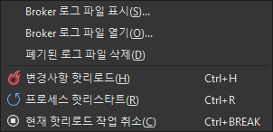
또한 에이전트는 언제든지 핫 리로드 작업을 예약할 수 있는 API도 제공합니다:
| API | 설명 |
|---|---|
void Agent::ScheduleReload(void);
|
핫 리로드 작업을 예약하여 WantsReload()가 가능한 한 빨리 true를 반환하도록 합니다. |
이 기능은 자체 단축키를 듣거나 사용자 지정 디버그 메뉴 등에서 Live++ 핫 리로드를 호출하려는 경우에 유용합니다.
내부적으로 이 작업은 백그라운드 컴파일 프로세스를 트리거합니다. 컴파일이 성공하면 새 코드를 애플리케이션에 로드하여 기존 코드에 연결합니다. 당연히 원본 실행 파일의 일부가 아닌 모든 함수도 올바르게 링크됩니다.
힌트
컴파일러 및 링커 출력은 항상 Broker UI의 Log 탭과 Visual Studio 또는 Rider와 같은 IDE의 출력 창에 모두 기록됩니다. 따라서 출력 창에서 해당 줄을 두 번 클릭하거나 F8 을 누르면 오류 위치로 이동할 수 있습니다. 또는 Broker UI의 로그 탭에서 오류의 해당 줄을 두 번 클릭하면 해당 줄이 강조 표시되고 IDE가 오류 위치로 이동합니다:

예제
Live++는 이를 보여주는 "01_HotReload"라는 예제와 함께 제공됩니다.
유니티 분할
Live++는 등록된 모듈의 일부인 유니티/점보/블롭 파일을 자동으로 감지하여 분할합니다. 이러한 모든 유니티 파일에 대해 Live++는 다음 예시와 같이 포함된 모든 .cpp 파일을 자체 .obj 파일로 분할하고 이를 재구성 및 재컴파일에 사용합니다:
// these are the contents of Unity.cpp:
#include "FileA.cpp"
#include "FileB.cpp"
#include "FileC.cpp"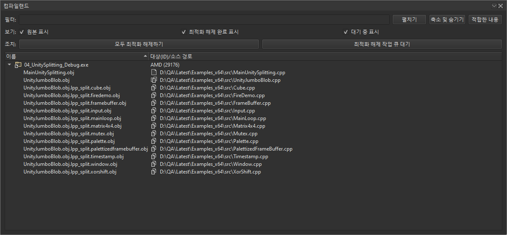
유니티 분할은 "unity/jumbo/blob/아말감 파일 분할 활성화" 설정을 사용하여 프로젝트 단위로 제어할 수 있습니다. 보다 세밀한 제어를 원한다면 분할하려는 모든 컴파일랜드에 대한 명령줄 옵션에서 LPP_FORCE_UNITY_SPLITTING을 전처리기 정의로 설정하여 컴파일랜드 단위로 Unity 분할을 활성화할 수 있습니다.
참고
유니티 분할은 유니티 파일에 포함된 .cpp 파일을 처음 건드릴 때만 수행하면 됩니다. 이렇게 하면 유니티 파일에 포함된 모든 번역 단위가 다시 컴파일되지만, 특히 최신 멀티코어 머신에서 이 작업은 전체 유니티 파일을 다시 컴파일하는 것만큼 빠른 경우가 많습니다.
예제
Live++에는 이를 보여주는 "04_UnitySplitting" 이라는 예제가 포함되어 있습니다.
중지된 프로세스
일반적으로 Live++는 핫 리로드 작업이 예약되는 즉시 수정된 파일을 자동으로 수집하고 백그라운드에서 컴파일을 시작합니다. 그러나 Live++가 활성화된 프로세스가 디버거에서 중단점 등에 멈춰 있으면 프로세스가 더 이상 진행되지 않으므로 Live++가 해당 프로세스와 통신할 수 없습니다.
Visual Studio 및 Rider 디버거
Visual Studio 또는 Rider로 디버깅할 때 Live++는 Live++와 계속 통신할 수 있는 모드로 프로세스를 전환하는 데 필요한 작업을 자동화하려고 시도합니다. 성공하면 Broker UI 로그에 "자동화된디버거가 PID XXXXX 로 프로세스에 첨부됨"가 표시되고 Live++는 변경 사항을 컴파일하고 코드 패치를 설치합니다. 그 후 프로세스는 다시 디버거에서 동일한 명령으로 유지됩니다.
기타 디버거
자동화가 실패했거나 WinDbg와 같은 다른 디버거를 사용하는 경우 핫 리로드 작업을 예약하면 UI 로그에 "PID XXXXX 인 대상 프로세스 대기 중입니다. 프로세스가 디버거에서 중단되어 있는 경우 '계속(Continue)'(Visual Studio 및 Rider에서 F5)를 누르십시오"가 표시됩니다. 애플리케이션을 재개하면 Live++가 변경 사항을 컴파일하고 설치합니다. 컴파일이 완료될 때까지 프로세스는 새 명령을 실행하지 않습니다. Live++에서 패치를 설치하면 프로세스가 자동으로 실행을 계속합니다.
이 경우의 전체 이벤트 순서는 아래에 설명되어 있습니다:
- 디버거가 중단점을 발견하고 프로세스를 중단합니다.
- 평소와 같이 디버깅이 시작됩니다.
- 현재 디버깅/실행 중인 코드를 하나 또는 여러 개 변경하고 Live++ 핫 리로드를 호출합니다.
- Live++는 수정된 파일을 선택하고 디버거에서 프로세스를 계속할 때까지 기다립니다.
- F5 키를 누르는 등의 방법으로 프로세스를 계속 진행합니다.
- 프로세스는 여전히 중단되지만 이번에는 Live++에 의해 중단됩니다.
- Live++가 변경 사항을 컴파일하고 코드 패치를 설치한 후 프로세스를 계속 진행합니다.
- 프로세스는 중단된 지점부터 계속 실행됩니다.
참고
이 시나리오에서 Live++는 교착 상태가 발생할 수 있으므로 사용자가 설치했을 수 있는 후크를 호출하지 않습니다.
Natvis 시각화
Natvis 시각화는 사용자 지정 유형에 대한 시각화 규칙으로, Visual Studio 디버거에서 이해합니다.
일반적으로 .natvis 파일은 Live++로 생성된 패치에 대해 디버거에서 자동으로 선택됩니다. 그러나 그렇지 않은 경우 이러한 파일을 사용자별 또는 시스템 전체 Natvis 디렉터리에 배치하는 것이 도움이 되는 경우가 많습니다.
핫-다시 시작
애플리케이션을 닫았다가 다시 시작할 때 발생하는 빌드 및 링크 시간을 줄이기 위해 Live++는 로드된 데이터와 내부 캐시를 영구적으로 유지하면서 애플리케이션을 다시 시작하는 메커니즘을 제공합니다.
애플리케이션이 메인 루프에 진입하면 메인 루프에 진입하기 전에 호출되는 시작 함수 등의 변경 효과를 확인하려면 애플리케이션을 다시 시작해야 합니다. 이 경우 일반적으로 다음과 같은 이벤트 순서가 수반됩니다:
- 사용자가 애플리케이션을 닫습니다.
- 빌드 시스템이 실행 파일을 링크합니다.
- 사용자가 애플리케이션을 다시 시작합니다.
- Live++에서 모듈이 활성화됩니다. 그러면 PDB에서 디버그 데이터를 로드하고 내부 캐시를 빌드합니다.
2단계와 4단계는 특히 AAA 프로젝트에서 상당한 시간이 소요될 수 있습니다. Live++에서 제공하는 핫-리스타트 기능을 활용하면 상황을 상당히 개선할 수 있습니다:
- Live++는 관심 있는 모든 프로세스에 재시작을 준비하라고 알려줍니다.
- 프로세스는 일종의 정리를 수행하려는 경우 선택적 코드를 실행합니다.
- Live++는 관심 있는 모든 프로세스를 다시 시작하여 내부 캐시는 물론 PDB에서 로드된 모든 데이터를 그대로 유지합니다.
- 모듈은 Live++에서 활성화됩니다. 이렇게 하면 기존 디버그 데이터와 캐시가 재사용되고 이전에 컴파일된 패치가 설치됩니다.
핫 재시작 메커니즘을 사용하면 링크 시간과 Live++ 로딩 시간이 거의 완전히 사라집니다.
예제
Live++는 이를 보여주는 "08_HotRestart" 라는 예제와 함께 제공됩니다.
핫 재시작 요청하기
핫 재시작을 요청하는 데는 네 가지 옵션이 있습니다:
-
기본 단축키 ctrl + alt + R 를 누릅니다. 이 바로가기는 현재 Live++ 애플리케이션에 포커스가 있는지 여부와 관계없이 작동합니다.
-
도구 메뉴에서 "프로세스 핫리스타트"을 실행합니다:
이렇게 하면 현재 Broker에 등록된 모든 프로세스에 핫 재시작 요청이 전송됩니다.
-
Broker의 프로세스 보기에서 하나 이상의 프로세스를 선택하고 마우스 오른쪽 버튼으로 클릭하여 컨텍스트 메뉴를 연 다음 "핫리스타트를 선택한 프로세스"을 선택합니다:
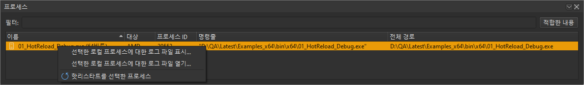
이렇게 하면 개별 프로세스를 핫 재시작할 수 있어 클라이언트/서버 시나리오에서 유용하게 사용할 수 있습니다.
-
또한, 에이전트는 언제든지 핫 재시작 작업을 예약할 수 있는 API도 제공합니다:
API 설명 void Agent::ScheduleRestart(LppRestartOption option);핫 리로드 작업을 예약하여 WantsRestart()가 가능한 한 빨리 true를 반환하도록 합니다.이 기능은 자체 단축키를 듣거나 사용자 지정 디버그 메뉴 등에서 Live++ 핫 재시작을 호출하려는 경우에 유용합니다.
기본 에이전트
기본 에이전트를 사용하는 경우 내부 구현에서 핫 재시작 요청에 대한 응답을 자동으로 처리합니다.
동기화된 에이전트
동기화된 에이전트를 사용하는 경우 다음 API를 사용하여 핫 재시작 요청에 응답해야 합니다:
| API | 설명 |
|---|---|
bool Agent::WantsRestart(void);
|
Live++가 프로세스를 핫 재시작할지 여부를 반환합니다. |
void Agent::Restart(LppRestartBehaviour behaviour, unsigned int exitCode, const wchar_t* const commandLineArguments);
|
주어진 동작을 준수하여 프로세스를 다시 시작합니다. 반환하지 않습니다. |
재시작 준비
핫 재시작이 요청된 후 Live++는 관련된 모든 프로세스에 재시작을 준비해야 한다고 알립니다. 애플리케이션은 주기적으로(예: 매 프레임마다) WantsRestart() 를 호출해야 하며, 재시작이 요청되면 true를 반환합니다. 재시작을 시작하기 전에 선택적 정리(예: 파일 플러시)를 수행할 수 있습니다.
재시작 시작하기
애플리케이션이 선택적 정리 작업을 마치면 바로 void Restart(LppRestartBehaviour behaviour, unsigned int exitCode, const wchar_t* const commandLineArguments)를 호출해야 합니다. 이 함수는 Live++에 프로세스를 다시 시작해야 한다는 신호를 보내고 프로세스를 종료합니다. const wchar_t* const commandLineArguments 매개변수는 선택 사항이며 재시작된 프로세스에 전달됩니다. nullptr 사용하면 원래 명령줄 환경으로 프로세스가 다시 시작됩니다.
재시작된 프로세스 중 하나에 연결된 모든 Visual Studio 또는 Rider 디버거는 핫 재시작 작업이 완료된 후 Live++에 의해 해당 프로세스에 자동으로 다시 연결됩니다.
종료 시 동작은 다음 표에 표시된 것처럼 LppRestartBehaviour 인수에 따라 달라집니다:
| 재시작 동작 | 설명 |
|---|---|
| LPP_RESTART_BEHAVIOUR_DEFAULT_EXIT | 지정된 종료 코드로 ExitProcess()를 호출합니다. |
| LPP_RESTART_BEHAVIOUR_EXIT_WITH_FLUSH | 지정된 종료 코드로 exit()를 호출합니다. |
| LPP_RESTART_BEHAVIOUR_EXIT_WITHOUT_FLUSH | 지정된 종료 코드로 _Exit()를 호출합니다. |
| LPP_RESTART_BEHAVIOUR_INSTANT_TERMINATION | 지정된 종료 코드로 TerminateProcess()를 호출합니다. |
힌트
재시작을 요청한 후 애플리케이션은 최대 10초 동안 선택적 정리 작업을 수행하고 void Restart(LppRestartBehaviour behaviour, unsigned int exitCode, const wchar_t* const commandLineArguments)를 호출할 수 있습니다. 이 시간 범위를 초과하면 Live++는 이 프로세스에 대한 재시작을 포기합니다.
핫픽스
Live++는 백그라운드에서 구조화된 예외 처리(SEH)를 사용하는 사용자 정의 벡터화된 예외 처리기(VEH) 를 통해 강력한 기본 제공 오류 복구 기능을 제공합니다. 이는 Live++의 핫 리로드 기능과 결합하여 액세스 위반, 0으로 나누기 등과 같이 치명적인 오류로부터 정상적으로 복구할 수 있는 경우가 많습니다. Live++의 예외 처리기를 사용하면 프로세스에서 처리되지 않은 예외(예: 액세스 위반으로 인해 발생)가 발생할 때마다 이 처리기가 호출됩니다.
Visual Studio 또는 Rider와 같은 디버거가 프로세스에 연결되어 있는 경우 항상 예외를 처리할 첫 번째 기회를 얻게 되며, 이는 운영 체제에 의해 보장됩니다.

디버거에서 프로세스를 계속 진행하면 Live++의 예외 처리기가 호출되고, 이 예외를 처리할 방법을 결정할 수 있는 대화 상자가 Broker에 열립니다:
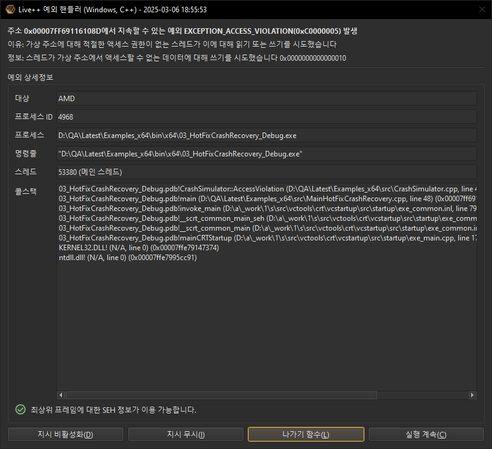
표시된 호출 스택에서 한 줄을 더블클릭하면 해당 소스 파일이 Visual Studio 또는 Rider에서 해당 위치에 열립니다.
예외 처리기에서 제공하는 옵션은 다음과 같습니다:
-
"지시 비활성화":
결함이 있는 머신 명령어를 완전히 비활성화합니다. 이 옵션은 예외가 재컴파일할 수 있는 자체 모듈/소스 파일 중 하나에서 발생하는 경우 유용하지만, 예를 들어 Visual Studio 런타임과 같은 타사 코드에는 절대 사용해서는 안 됩니다. -
"지시 무시":
결함이 있는 머신 명령어를 한 번 무시합니다. 다음에 해당 함수가 호출될 때 그 사이에 코드가 다시 컴파일되지 않는 한 이 명령어는 동일한 예외를 발생시킵니다. -
"나가기 함수":
현재 함수를 종료하고 상위 함수에서 실행을 계속합니다. 또한 전체 SEH 정보를 사용할 수 있는 경우 스택이 언월되고 로컬 변수의 소멸자가 호출됩니다. -
"실행 계속":
이 예외를 한 번 무시하고 실행을 계속합니다. 그러면 다음에 설치된 예외 처리기가 있는 경우 예외를 처리기로 넘깁니다. 마지막으로 설치된 예외 처리기가 예외를 처리할 기회를 얻은 후 프로세스는 디버거에서 중지되거나(디버거가 연결된 경우) 종료됩니다.
예외 처리기 대화 상자가 표시되는 동안에는 평소처럼 Live++를 사용하여 코드를 변경하고 다시 컴파일할 수 있습니다. 그러나 새 코드가 백그라운드에서 설치되더라도 프로세스 실행은 실패 지점부터 계속되어야 하므로 해당 예외를 처리할 방법을 결정해야 합니다.
참고
이 시나리오에서 Live++는 코드를 다시 컴파일할 때 교착 상태가 발생할 수 있으므로 후크를 호출하지 않습니다.
힌트
실행 파일에서 SEH 정보를 사용할 수 있도록 하려면 다음 컴파일러 설정을 활성화해야 합니다:
C/C++ -> Code Generation -> Enable C++ Exceptions -> Yes with SEH Exceptions (/EHa)
SEH 정보는 현재 함수를 종료할 때 스택을 해제할 때만 필요합니다. 예외 핸들러에 SEH 예외 정보가 없는 경우에도 문제 없이 동작하지만 스택 언월드는 수행되지 않습니다.
예제
Live++에는 이를 보여주는 "03_HotFixCrashRecovery" 라는 예제가 함께 제공됩니다.
핫 디옵티마이즈
코드를 즉시 최적화 해제하면 애플리케이션의 디버그 가능성과 반복 시간 간의 균형을 맞출 수 있습니다. 최적화되지 않은 디버그 빌드는 최적화된 리테일 빌드보다 디버깅하기가 훨씬 쉽지만 개발 중에 사용하기에는 너무 느린 경우가 많습니다. 반면에 최적화된 빌드는 훨씬 더 나은 성능을 제공하지만 디버깅하기가 훨씬 더 어렵습니다.
이를 완화하기 위해 Live++는 실행 중인 애플리케이션에서 코드를 쉽게 최적화 해제하고, 코드를 디버깅하고, 완전히 최적화된 빌드로 돌아갈 수 있는 기능을 제공합니다. Hot-Deoptimize 기능을 사용할 때는 사전 세금이 없습니다. 번역 단위는 필요에 따라 최적화 해제되기 때문입니다. 이는 다른 접근 방식과 다르며, Hot-Deoptimize는 완전히 IDE에 독립적이며 모든 지원 플랫폼에서 사용할 수 있습니다.
내부적으로는 비활성화되는 최적화 플래그를 제외하고 원래 컴파일러 옵션을 사용하여 파일을 다시 컴파일합니다. 즉, 전처리기 정의나 매크로 정의에 사용되는 기타 플래그도 최적화 해제된 버전에서 설정됩니다. 물론 어설션과 같은 기능은 디버그 빌드에서만 정의되는 매크로를 사용하는 경우가 많으므로 최적화 해제된 코드가 전체 디버그 빌드의 코드와 엄격하게 동일하지 않다는 것을 의미합니다.
Live++에서 제공하는 옵션은 다음과 같습니다:
- Broker의 컴파일랜드 보기에서 하나 이상의 파일을 선택하고 마우스 오른쪽 버튼을 클릭하여 컨텍스트 메뉴를 연 다음 "선택한 컴파일랜드에 대해 최적화 토글" 을 선택하면 선택한 컴파일랜드의 최적화를 즉시 해제할 수 있습니다.
- 또는 "선택한 컴파일랜드를 최적화 해제 작업 큐에 담기"를 선택하여 나중에 최적화 해제를 위해 컴파일랜드를 대기열에 넣을 수도 있습니다. 대기열에 있는 컴파일랜드의 최적화 해제는 "최적화 해제 작업 큐 대기" 작업을 선택하여 시작할 수 있습니다.
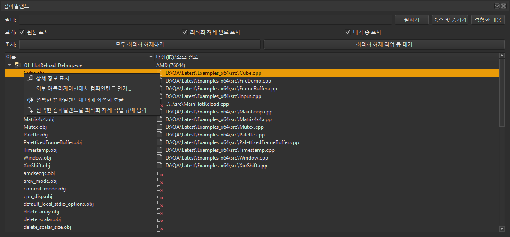
- Visual Studio 또는 Rider에서 기본 단축키 ctrl + alt + O 를 눌러 현재 열려 있는 파일의 최적화 상태를 전환할 수 있습니다.
- 파일 상단에 매크로 LPP_DISABLE_OPTIMIZATIONS를 배치하고 변경 사항을 핫 로드하여 파일의 최적화 상태를 토글할 수도 있습니다. 이 방법의 단점은 이 파일에 Live++ API "LivePP/API/x64/LPP_API_x64_CPP.h" 가 표시되어야 하며, 컴파일랜드 보기에서 비최적화된 상태를 추적할 수 없다는 것입니다.
- 상황에 맞는 메뉴에서 "선택한 컴파일랜드를 최적화 해제 작업 큐에 담기"를 선택하면 대기열에 있는 컴파일을 다시 대기열에서 제거할 수 있습니다.
- 모든 컴파일랜드를 원래 최적화 상태로 되돌리려면 "모두 최적화 해제하기" 작업을 선택합니다.
현재 최적화 해제 상태인 소스 파일은 컴파일랜드 보기에서  기호로, 현재 대기 중인 상태인 소스 파일은
기호로, 현재 대기 중인 상태인 소스 파일은  기호로 각각 표시됩니다:
기호로 각각 표시됩니다:
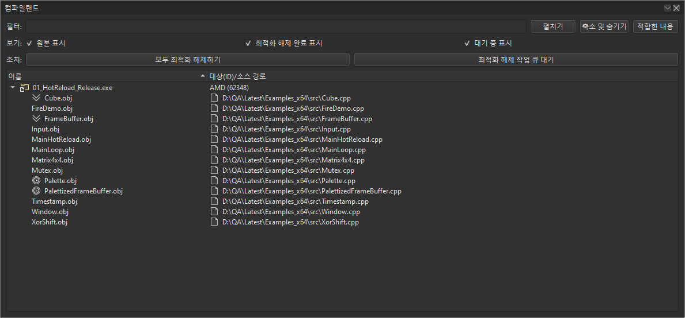
예제
Live++는 이를 보여주는 "05_ToggleOptimizations" 라는 예제와 함께 제공됩니다.
멀티 프로세스 편집
특정 클라이언트/서버 및 에디터/게임 설정에서는 변경 사항을 여러 프로세스 또는 동일한 애플리케이션의 여러 인스턴스에 한 번에 핫 리로드할 수 있으면 매우 유용합니다. Live++에서는 이 기능이 즉시 작동하며 특별한 설정이 필요하지 않습니다.
Broker의 프로세스 보기에는 현재 Live++에 등록된 모든 프로세스가 표시됩니다:
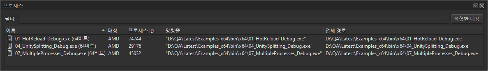
등록된 프로세스의 수에 관계없이 영향을 받거나 선택된 프로세스에 대해 Live++에서 지원하는 모든 작업이 수행됩니다. Live++는 여러 모듈 또는 애플리케이션의 일부인 소스 파일에 대한 변경 사항을 자동으로 컴파일하고 영향을 받는 모든 프로세스에 핫 로드합니다.
또한 Live++는 로드 중에 모든 코드 변경 사항을 Live++ 애플리케이션의 후속 인스턴스에 자동으로 주입하여 그 동안 실행 파일이 디스크에 링크되거나 변경되지 않았더라도 새로운 동작을 생성합니다. 이후 코드에 대한 변경 사항은 시작 시점에 관계없이 실행 중인 모든 프로세스에 핫 로드됩니다.
예제
Live++는 이를 보여주는 "07_MultipleProcesses" 라는 예제와 함께 제공됩니다.
네트워크 편집
다중 프로세스 편집과 마찬가지로 Live++를 모든 시스템에서 실행 중인 원격 프로세스에서 작동하도록 하기 위해 특별한 코드 설정이 필요하지 않습니다. 유일한 요구 사항은 해당 원격 프로세스가 LAN 연결을 통해 로컬 Broker에 연결해야 한다는 것뿐이며, 다음과 같이 구성해야 합니다:
-
로컬 컴퓨터에서 Broker를 시작하고 창 제목에 표시된 호스트 이름 또는 IP 주소(예: 192.168.8.147)를 확인합니다:

-
원격 컴퓨터에서 Broker를 열고, 편집 -> 전역 환경설정... -> 네트워크 이동하여, Broker를 실행하는 로컬 컴퓨터의 호스트 이름 또는 IP 주소를 입력한 후 "저장"을 누릅니다:
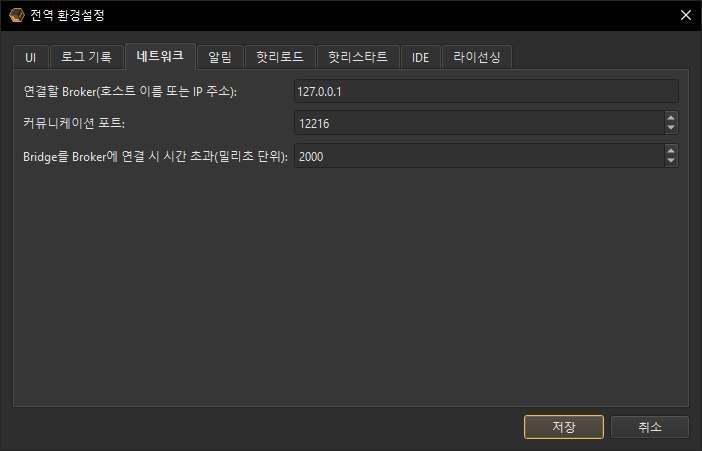
이렇게 하면 원격 컴퓨터에 전역 환경설정이 저장되며 각 원격 컴퓨터에 대해 한 번만 수행하면 됩니다.
네트워크 편집이 작동하려면 로컬 머신의 애플리케이션을 먼저 시작한 다음 원격 머신의 애플리케이션을 시작해야 합니다. 하지만 Live++는 로컬과 원격 프로세스가 혼합된 경우, 그리고 어떤 시스템에서든 동일한 애플리케이션의 여러 인스턴스에서도 작동합니다.
참고
Live++에 필요한 대부분의 정보는 로컬 머신에서만 사용할 수 있으므로 코드 변경 사항은 로컬 머신에서만 수집 및 컴파일됩니다.
연결된 머신과 프로세스는 각각 대상 및 프로세스 보기에서 확인할 수 있습니다:
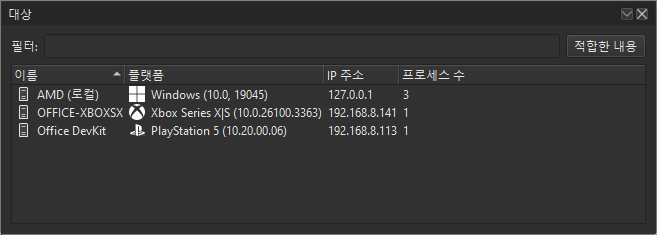
예제
Live++는 이를 보여주는 "10_NetworkedEditing" 이라는 예제와 함께 제공됩니다.
라이선스
활성화
Live++를 사용하려면 먼저 머신에서 라이선스를 활성화해야 합니다. 이를 위해 Broker를 시작하고 메인 메뉴에서 라이선싱 -> 활성화... 선택한 후 라이선스를 활성화할 플랫폼과 언어(예: Windows, C++)를 선택합니다. 그러면 활성화 코드와 사용자 ID를 입력해야 하는 대화 상자가 열립니다:
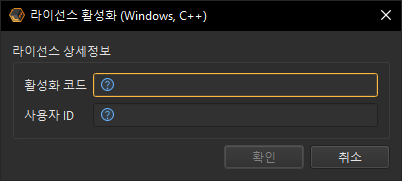
활성화 코드는 Live++ 구매 시 제공되며, XXXX-XXXX-XXXX 형식의 12자 키입니다.
사용자 ID는 자유롭게 선택할 수 있으며 주어진 활성화 코드와 연결된 라이선스 풀 내에서 라이선스를 식별합니다. 이는 기존 라이선스를 먼저 비활성화하지 않고 컴퓨터를 다시 설치하는 등의 이유로 오프라인에서 라이선스를 비활성화해야 하는 경우에 필요합니다. 일반적인 사용자 ID의 예로는 "Jane home office" 또는 "John laptop"이 있습니다.
대화 상자에서 "확인"을 누르면 Live++가 입력한 데이터를 사용하여 활성화 서버에 연결하려고 시도합니다. 주어진 활성화 코드가 유효하면 Live++는 사용자 컴퓨터에 연결된 라이선스를 생성하고 사용자만 사용할 수 있습니다. 다른 모든 경우에는 오류가 대신 표시됩니다.
참고
회사 방화벽이나 프록시 서버로 인해 활성화 서버에 연결하는 데 문제가 있는 경우 지원팀에 문의하세요.
비활성화
컴퓨터를 다시 설치해야 하거나 동료 중 한 명이 사용할 수 있도록 라이선스를 비활성화하려는 경우 등 라이선스를 비활성화해야 하는 경우, Broker 메인 메뉴에서 라이선싱 -> 비활성화... 로 이동하여 라이선스를 비활성화할 플랫폼과 언어(예: Windows, C++)를 선택합니다. 그러면 활성화 서버에서 라이선스가 비활성화됩니다.
무료 평가판
아직 라이선스가 없고 30일 무료 평가판을 사용해 보려면 Live++ 핫로드를 실행하면 다음과 같은 대화 상자가 나타납니다:
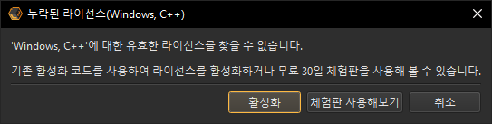
이 대화 상자에서 체험판 사용해보기 체험을 선택하면 Live++가 활성화 서버에서 평가판 라이선스를 가져옵니다.
명령줄 도구
Live++ 설치의 CLI 디렉토리에 있는 명령줄 도구를 사용하여 라이선스 활성화 및 비활성화를 자동화할 수도 있습니다. 플랫폼과 언어의 각 조합에 대해 하나의 도구가 있습니다(예: "LPP_License_x64_CPP.exe" 는 Windows, C++용 라이선스 관리를 담당합니다).
각 도구는 각각 라이선스 활성화 및 비활성화를 위한 "--activate" 및 "--deactivate " 옵션을 이해합니다. 자세한 내용은 통합된 "-h" 도움말 옵션을 참조하세요.

GUI
Live++의 Broker GUI는 등록된 대상, 프로세스, 모듈 및 컴파일랜드에 대한 개요를 제공하는 여러 가지 도킹 및 플로팅 가능한 창과 보기로 구성되어 있습니다.
타깃
대상 보기에는 연결된 모든 로컬 및 원격 시스템, 해당 플랫폼, IP 주소, 등록된 프로세스 수가 표시됩니다.
프로세스
프로세스 보기에는 등록된 모든 프로세스, 해당 대상, 프로세스 ID, 실행 파일의 전체 경로, 프로세스가 시작된 명령줄이 표시됩니다.
또한 프로세스 보기는 마우스 오른쪽 버튼 클릭 시 다음과 같은 옵션이 있는 상황에 맞는 메뉴도 제공합니다:
-
"선택한 로컬 프로세스에 대한 로그 파일 표시...":
Windows 탐색기에서 선택한 프로세스와 관련된 로그 파일을 표시합니다. -
"선택한 로컬 프로세스에 대한 로그 파일 열기...":
해당 기본 애플리케이션을 사용하여 선택한 프로세스와 연결된 로그 파일을 엽니다. -
"핫리스타트를 선택한 프로세스":
선택한 프로세스에 핫-다시 시작 요청을 보냅니다.
모듈
모듈 보기에는 로드된 모든 모듈, 모듈이 로드된 프로세스의 ID, 크기 및 모듈이 로드된 주소 범위가 표시됩니다.
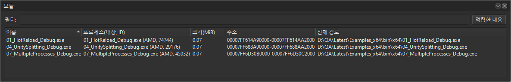
컴파일랜드
컴파일랜드 보기에는 모든 모듈과 해당 컴파일랜드가 각 컴파일랜드의 소스 경로와 함께 계층 트리에 표시됩니다.
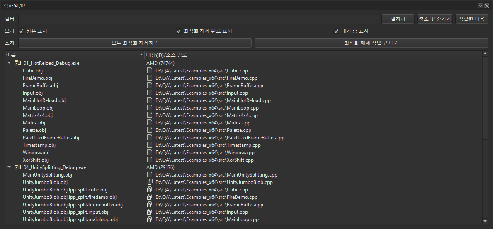
트리 보기에서 컴파일랜드를 더블클릭하면 실행 중인 Visual Studio 또는 Rider 인스턴스에서 해당 소스 파일이 열립니다.
또한 컴파일랜드 뷰는 오른쪽 클릭 시 다음과 같은 옵션이 포함된 컨텍스트 메뉴도 제공합니다:
-
"상세 정보 표시...":
컴파일랜드의 세부 정보를 별도의 대화 상자에 표시합니다. -
"외부 애플리케이션에서 컴파일랜드 열기...":
해당 기본 애플리케이션을 사용하여 선택한 컴파일랜드의 소스 파일을 엽니다. -
"선택한 컴파일랜드에 대해 최적화 토글":
선택한 컴파일랜드의 최적화 상태를 토글합니다. -
"선택한 컴파일랜드를 최적화 해제 작업 큐에 담기":
나중에 최적화 해제를 위해 선택한 컴파일랜드를 대기열에 추가합니다.
컴파일랜드 상세정보 대화상자는 재컴파일에 사용되는 PDB 경로, 컴파일러 경로 및 명령줄 등 각 컴파일랜드에 대한 자세한 정보를 제공합니다.
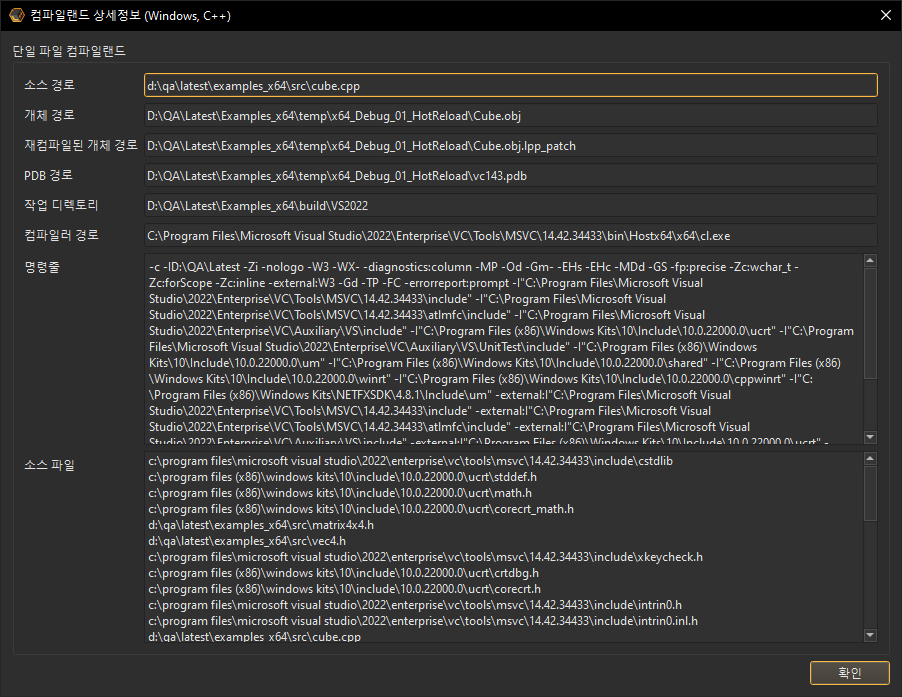
전역 환경설정
글로벌 환경설정은 Broker 메인 메뉴에서 편집 -> 전역 환경설정... 선택하여 구성할 수 있습니다. Broker의 모양과 동작을 사용자 정의할 수 있는 몇 가지 전역 설정을 제공하며, 항상 Broker 디렉터리의 global_preferences.json에 저장됩니다.
같은 디렉토리에 global_preferences_default.json 파일을 제공하여 기본 설정을 정의하고, global_preferences_override.json 파일을 제공하여 설정을 재정의할 수 있습니다. Live++는 다음 순서로 파일을 로드합니다:
- global_preferences_default.json
- global_preferences.json
- global_preferences_override.json
이 동작은 의미 있는 기본값을 설정하거나 특정 환경설정의 값을 팀 전체에 강제 적용하면서 나머지 환경설정은 개별 사용자가 원하는 대로 구성할 수 있도록 하려는 경우에 유용합니다.
UI
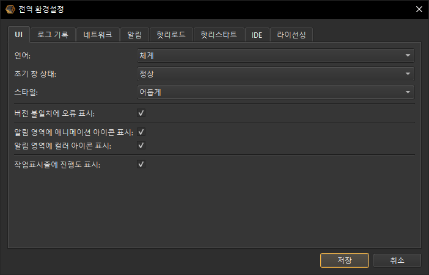
-
"언어:"
언어를 선택할 수 있도록 합니다. -
"초기 창 상태:"
Broker를 일반 크기로 시작할지, 최대화할지, 시스템 트레이에서 시작할지 선택할 수 있습니다. -
"스타일:"
밝은 스타일과 어두운 스타일 중에서 선택할 수 있습니다. -
"버전 불일치에 오류 표시:"
이 옵션을 활성화하면 에이전트와 Broker 간의 API 버전이 일치하지 않는 경우 모달 대화 상자에 오류를 표시합니다. -
"알림 영역에 애니메이션 아이콘 표시:"
이 옵션을 사용 설정하면 작업이 진행 중인 동안 알림 영역의 아이콘에 애니메이션이 표시됩니다. -
"알림 영역에 컬러 아이콘 표시:"
이 옵션을 사용 설정하면 마지막 작업이 성공했는지 또는 오류가 발생했는지에 따라 알림 영역의 아이콘이 색상으로 표시됩니다. -
"작업표시줄에 진행도 표시:"
이 옵션을 활성화하면 작업이 진행 중인 동안 작업 표시줄에 애니메이션이 표시됩니다.
로깅
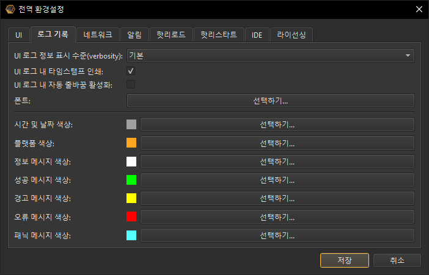
-
"UI 로그 정보 표시 수준(verbosity):"
기본 로그 출력을 원하는지 자세한 로그 출력을 원하는지 사용자 지정합니다. -
"UI 로그 내 타임스탬프 인쇄:"
UI 로그에 타임스탬프를 출력할지 여부를 사용자 지정합니다. -
"UI 로그 내 자동 줄바꿈 활성화:"
UI 로그에 단어 줄 바꿈을 사용할지 여부를 사용자 지정합니다.
네트워크
-
"연결할 Broker(호스트 이름 또는 IP 주소):"
로컬 컴퓨터에서 실행되는 프로세스는 항상 127.0.0.1 또는 localhost를 사용해야 합니다. 원격 컴퓨터에서 실행되는 프로세스는 그에 따라 Broker IP를 구성해야 합니다. -
"커뮤니케이션 포트:"
Bridge와 Broker 간의 TCP/IP 연결에 사용되는 포트입니다. -
"Bridge를 Broker에 연결 시 시간 초과(밀리초 단위):"
Bridge가 Broker에 연결할 때 고려할 시간 제한입니다.
알림
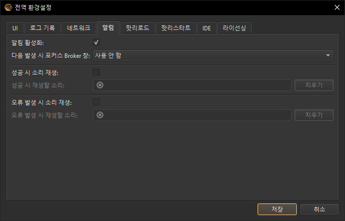
파일 경로는 절대 경로이거나 Broker에 대한 상대 경로일 수 있습니다.
-
"알림 활성화:"
이 옵션을 활성화하면 Live++에서 완료된 작업에 대한 토스트 알림을 표시합니다. -
"다음 발생 시 포커스 Broker 창:"
브로커 창이 언제 포커싱될지 선택할 수 있습니다: 절대, 핫 리로드 또는 핫 재시작 작업 시, 오류 시, 작업 성공 시 또는 항상. -
"성공 시 소리 재생:", "성공 시 재생할 소리:"
컴파일이 성공할 때마다 재생할 .WAV 파일을 지정할 수 있습니다. -
"오류 발생 시 소리 재생:", "오류 발생 시 재생할 소리:"
컴파일에 실패할 때마다 재생할 .WAV 파일을 지정할 수 있습니다.
핫-로드
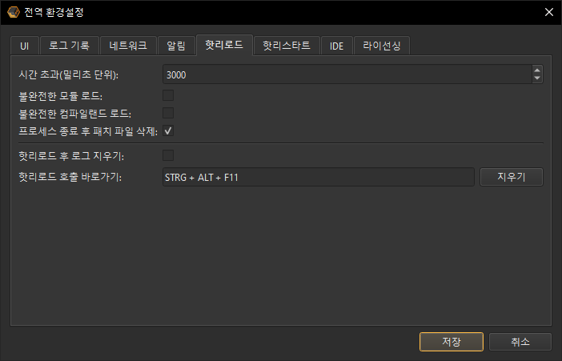
-
"시간 초과(밀리초 단위):"
핫 로드 작업을 예약할 때 사용되는 밀리초 단위의 시간 초과입니다. 시간 초과보다 응답하는 데 시간이 오래 걸리는 에이전트는 핫 로드 작업을 포기합니다. -
"불완전한 모듈 로드:"
이 옵션을 사용 설정하면 불완전한 모듈이 로드되어 컴파일랜드 보기에 표시되므로 누락된 링커 옵션과 같은 결함을 검사할 수 있습니다. -
"불완전한 컴파일랜드 로드:"
이 옵션을 활성화하면 불완전한 컴파일랜드가 로드되고 컴파일랜드 보기에 표시되므로 누락된 컴파일러 옵션과 같은 결함을 검사할 수 있습니다. -
"프로세스 종료 후 패치 파일 삭제:"
이 옵션을 활성화하면 해당 프로세스가 종료되는 즉시 Live++ 패치에 속하는 파일이 삭제됩니다. -
"핫리로드 후 로그 지우기:"
이 옵션을 활성화하면 핫 로드 시 UI 로그가 지워집니다. -
"핫리로드 호출 바로가기:"
핫-로드를 호출하는 바로 가기를 구성할 수 있습니다.
핫-다시 시작
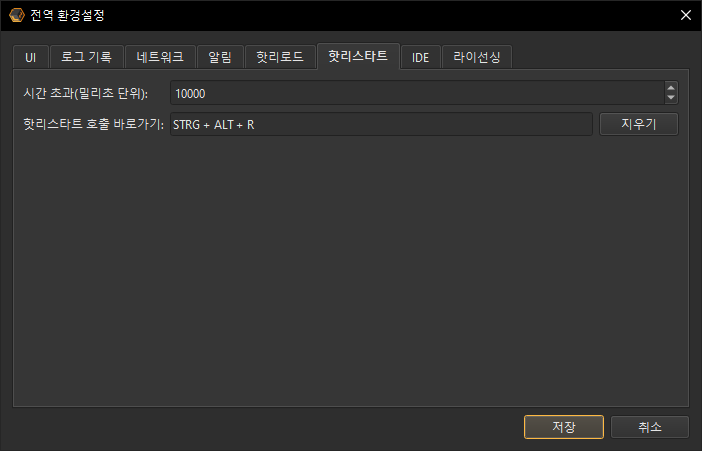
-
"시간 초과(밀리초 단위):"
핫 재시작 작업을 예약할 때 사용되는 시간 초과(밀리초)입니다. 이 시간 초과보다 응답하는 데 시간이 오래 걸리는 에이전트는 핫 재시작 작업을 포기합니다. -
"핫리스타트 호출 바로가기:"
핫 재시작을 호출하는 바로 가기를 구성할 수 있습니다.
IDE
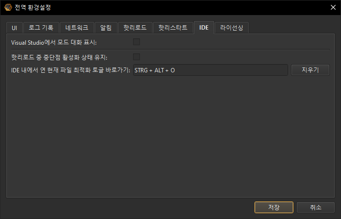
-
"Visual Studio에서 모드 대화 표시:"
이 옵션을 활성화하면 핫 리로드 작업 중에 Visual Studio에 모달 대화 상자가 표시됩니다. 이렇게 하면 Live++ 작업이 진행되는 동안에는 Visual Studio 디버거와의 상호 작용이 금지됩니다.
-
"핫리로드 중 중단점 활성화 상태 유지:"
이 옵션을 활성화하면 핫 리로드 작업 중에 중단점이 활성화된 상태로 유지됩니다. 일반적으로 Visual Studio 및 Rider의 중단점은 핫-리로드 작업 중에 일시적으로 비활성화되어 실수로 프로세스가 중단되는 것을 방지합니다. -
"IDE 내에서 연 현재 파일 최적화 토글 바로가기:"
Visual Studio 또는 Rider에서 현재 열려 있는 파일의 최적화를 토글하는 바로 가기를 구성할 수 있습니다.
라이선스
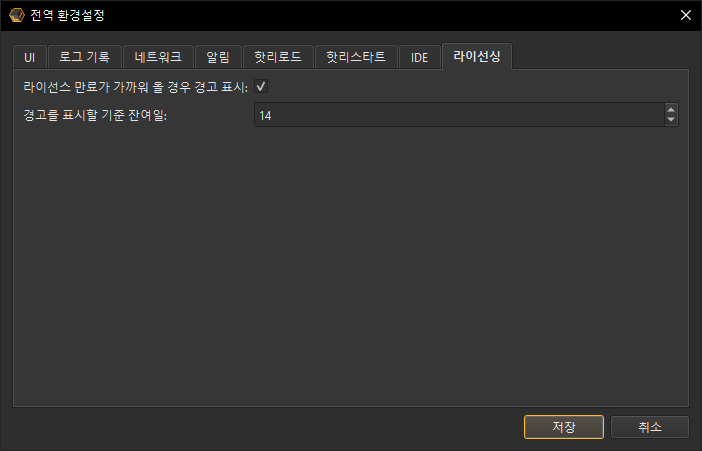
-
"라이선스 만료가 가까워 올 경우 경고 표시:"
이 옵션을 활성화하면 현재 라이선스가 곧 만료될 때마다 Broker에 경고가 표시됩니다. -
"경고를 표시할 기준 잔여일:"
라이선스 만료가 임박했을 때 며칠 동안 경고를 받을지 설정할 수 있습니다.
프로젝트 환경설정
프로젝트 환경설정은 Broker 메인 메뉴에서 편집 -> 프로젝트 환경설정... 선택하여 구성할 수 있습니다. Live++의 동작을 사용자 지정할 수 있는 프로젝트별 설정을 제공하며, 원하는 .json 파일에 저장됩니다.
일반
프로젝트 환경설정을 사용하려면 두 가지 옵션이 있습니다:
-
다음 예시와 같이 에이전트를 만들 때 프로젝트별 .json 파일을 인수로 전달합니다:
// create a synchronized Live++ agent, loading the required project preferences. // the path to load the preferences from can be absolute, or relative to this application. lpp::LppSynchronizedAgent lppAgent = lpp::LppCreateSynchronizedAgentWithPreferencesFromFile(nullptr, L"ThirdParty/LivePP", L"Preferences/continuous_compilation.json"); -
다음 예와 같이 먼저 기본
lpp::LppProjectPreferences인스턴스를 만들어 원하는 기본 설정을 채운 다음 다음 예와 같이 에이전트를 만들 때 인자로 전달합니다:// disable unity splitting in the preferences lpp::LppProjectPreferences prefs = lpp::LppCreateDefaultProjectPreferences(); prefs.unitySplitting.isEnabled = false; // create a default Live++ agent with the project preferences lpp::LppDefaultAgent lppAgent = lpp::LppCreateDefaultAgentWithPreferences(nullptr, L"ThirdParty/LivePP", &prefs);
에이전트를 생성할 때 .json 파일 경로나 환경설정 인스턴스를 전달하지 않으면 Live++는 모든 프로젝트 환경설정에 대해 기본값을 사용합니다.
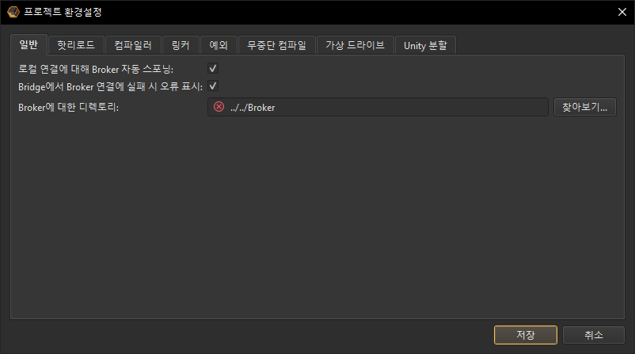
-
"로컬 연결에 대해 Broker 자동 스포닝:"
이 옵션을 활성화하면 에이전트가 대상 애플리케이션에 로드되는 즉시 로컬 연결에 대해 자동으로 Broker가 스폰됩니다. -
"Bridge에서 Broker 연결에 실패 시 오류 표시:"
이 옵션을 활성화하면 Bridge가 Broker에 연결할 수 없는 경우 오류를 보고합니다. -
"Broker에 대한 디렉토리:"
Agent가 스폰할 Broker의 디렉터리를 지정합니다. 디렉터리는 절대 디렉터리이거나 Agent에 대한 상대 디렉터리일 수 있습니다.
핫 로드
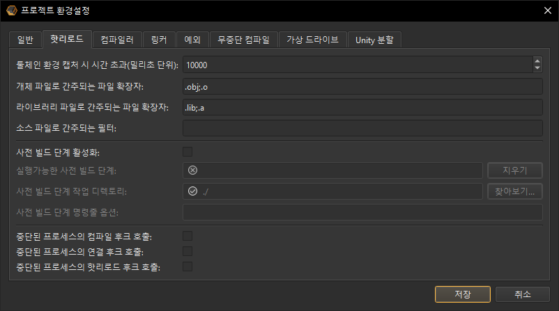
-
"툴체인 환경 캡처 시 시간 초과(밀리초 단위):"
Visual Studio 컴파일러 및 링커 환경을 캡처할 때 사용되는 시간 초과(밀리초)입니다. 시간 초과보다 실행에 더 오래 걸리는 배치 파일은 자동으로 중단됩니다. -
"개체 파일로 간주되는 파일 확장자:"
개체 파일에 고려할 파일 확장자 목록입니다. 다른 파일 확장명은 무시됩니다. -
"라이브러리 파일로 간주되는 파일 확장자:"
라이브러리 파일에 고려할 파일 확장자 목록입니다. 다른 파일 확장명은 무시됩니다. -
"소스 파일로 간주되는 필터:"
소스 파일을 필터링하는 데 사용되는 세미콜론으로 구분된 문자열 목록입니다. 필터 중 하나가 포함된 소스 파일은 완전히 무시됩니다. 필터 검사는 소문자 소스 경로를 사용하여 수행됩니다. -
"사전 빌드 단계 활성화:"
각 핫 리로드 작업에서 Live++가 사전 빌드 단계를 수행할지 여부를 결정할 수 있습니다. -
"실행가능한 사전 빌드 단계:"
사전 빌드 단계를 수행할 때 호출할 실행 파일을 선택할 수 있습니다. -
"사전 빌드 단계 작업 디렉토리:"
사전 빌드 단계를 수행할 때 사용되는 작업 디렉터리를 선택할 수 있습니다. -
"사전 빌드 단계 명령줄 옵션:"
사전 빌드 단계를 수행할 때 호출되는 실행 파일에 전달되는 명령줄 옵션을 지정할 수 있습니다. -
"중단된 프로세스의 컴파일 후크 호출:"
Live++가 중지된 프로세스에 대해 컴파일 훅을 호출할지 여부를 결정할 수 있습니다. -
"중단된 프로세스의 연결 후크 호출:"
Live++가 중단된 프로세스에 대해 링크 훅을 호출할지 여부를 결정할 수 있습니다. -
"중단된 프로세스의 핫리로드 후크 호출:"
- Live++가 중단된 프로세스에 대해 핫-로드 후크를 호출할지 여부를 결정할 수 있습니다.
참고
Live++가 중단된 프로세스에 대해 훅을 호출하도록 허용하면 교착 상태가 발생할 수 있으므로 잠재적으로 위험한 작업입니다. 중단된 프로세스의 경우 Live++는 프로세스의 다른 모든 스레드가 일시 중단된 상태에서 항상 수신자 스레드에서 후크를 호출합니다. 일시 중단된 스레드가 동일한 프리미티브를 붙잡고 있는 동안 후크 중 하나가 뮤텍스와 같은 동기화 프리미티브를 잠그려고 하면 교착 상태가 발생합니다.
따라서 훅 구현은 모든 스레드가 언제든지 일시 중단될 수 있다는 가정 하에 작동해야 합니다.
예제
Live++는 사전 빌드 단계를 설정하는 방법을 보여주는 "14_PreBuildStep" 이라는 예제와 함께 제공됩니다.
컴파일러
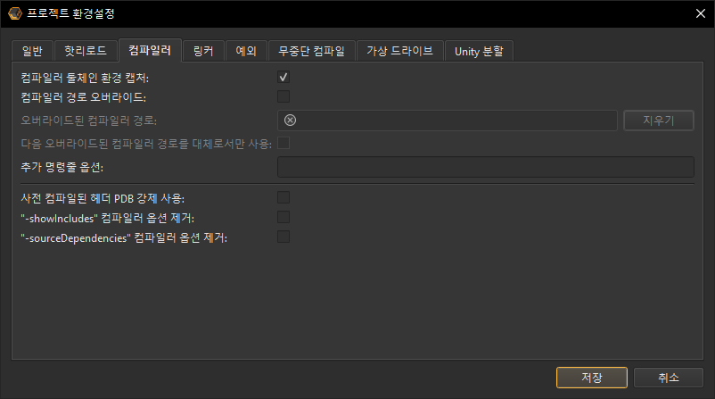
파일 경로는 절대 경로이거나 Broker를 기준으로 한 상대 경로일 수 있습니다.
-
"컴파일러 툴체인 환경 캡처:"
Live++가 vcvars*.bat 컴파일러 툴체인 환경을 검색하고 사용할지 여부를 결정할 수 있습니다. 이 설정을 비활성화하면 커스텀 빌드 시스템에 유용할 수 있습니다. -
"컴파일러 경로 오버라이드:"
PDB에서 찾은 컴파일러 경로를 재정의하여 Live++가 파일을 다시 컴파일할 때 이 컴파일러를 대신 사용할 수 있도록 합니다. 커스텀 빌드 시스템을 사용할 때 드문 경우에만 필요합니다. -
"다음 오버라이드된 컴파일러 경로를 대체로서만 사용:"
이 옵션을 활성화하면 PDB에서 감지된 컴파일러를 사용할 수 없는 경우에만 재정의된 컴파일러 경로가 사용됩니다. -
"추가 명령줄 옵션:"
패치를 만들 때 컴파일러에 추가 옵션을 전달할 수 있습니다. -
"사전 컴파일된 헤더 PDB 강제 사용:"
이 옵션을 활성화하면 재컴파일 시 Live++가 각 번역 단위가 해당 사전 컴파일된 헤더와 동일한 PDB를 사용하도록 강제합니다. 이는 주로 원격 에이전트 및 사전 컴파일된 헤더 파일과 함께 Incredibuild를 사용할 때 발생하는 컴파일러 오류 C2858에 대한 해결 방법으로 사용됩니다. -
""-showIncludes" 컴파일러 옵션 제거:"
이 옵션을 활성화하면 코드를 다시 컴파일할 때 일부 빌드 시스템에서 사용하는 -showIncludes 컴파일러 옵션이 제거됩니다. -
""-sourceDependencies" 컴파일러 옵션 제거:"
이 옵션을 활성화하면 코드를 다시 컴파일할 때 일부 빌드 시스템에서 사용하는 -sourceDependencies 컴파일러 옵션이 제거됩니다.
링커
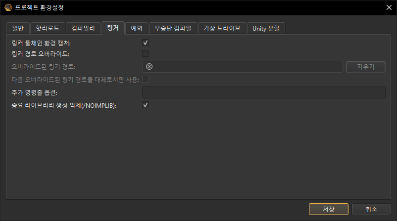
파일 경로는 절대 경로이거나 Broker에 대한 상대 경로일 수 있습니다.
-
"링커 툴체인 환경 캡처:"
Live++가 vcvars*.bat 링커 툴체인 환경을 검색하고 사용할지 여부를 결정할 수 있습니다. 이 설정을 비활성화하면 커스텀 빌드 시스템에 유용할 수 있습니다. -
"링커 경로 오버라이드:", "오버라이드된 링커 경로:"
PDB에서 찾은 링커 경로를 재정의할 수 있으므로 Live++가 파일을 다시 컴파일할 때 이 링커를 대신 사용합니다. 커스텀 빌드 시스템을 사용할 때 드문 경우에만 필요합니다. -
"다음 오버라이드된 링커 경로를 대체로서만 사용:"
이 옵션을 활성화하면 PDB에서 감지된 링커를 사용할 수 없는 경우에만 재정의된 링커 경로가 사용됩니다. -
"추가 명령줄 옵션:"
패치를 만들 때 링커에 추가 옵션을 전달할 수 있습니다. -
"중요 라이브러리 생성 억제(/NOIMPLIB):"
패치 DLL을 만들 때 일부 링커는 심볼을 내보내지 않는 DLL에 대해서도 가져오기 라이브러리를 만들 것을 고집합니다. Live++에서는 이러한 임포트 라이브러리가 필요하지 않지만, 일부 구형 링커는 /NOIMPLIB 옵션을 이해하지 못합니다.
예외
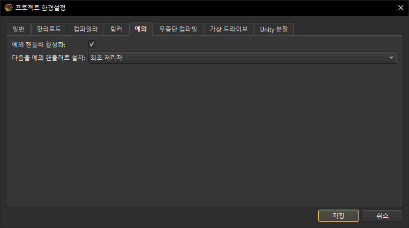
-
"예외 핸들러 활성화:"
이 옵션을 활성화하면 Live++는 핫픽스 기능을 위한 예외 처리기를 설치합니다. -
"다음을 예외 핸들러로 설치:"
예외 핸들러를 첫 번째 핸들러로 설치할지 마지막 핸들러로 설치할지 선택할 수 있습니다.
연속 컴파일
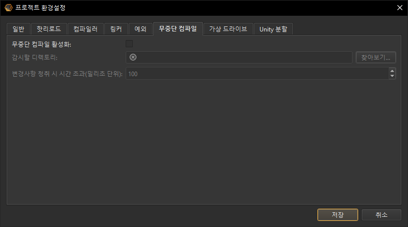
디렉터리는 절대 디렉터리 또는 Broker에 대한 상대 디렉터리일 수 있습니다.
-
"무중단 컴파일 활성화:"
연속 컴파일이 활성화되면 Live++는 지정된 디렉터리(및 하위 디렉터리)에서 변경 알림을 기다렸다가 시간 제한이 만료되면 변경 사항을 자동으로 컴파일합니다. -
"감시할 디렉토리:"
연속 컴파일을 사용할 때 변경 사항을 감시하는 디렉터리를 설정할 수 있습니다. -
"변경사항 청취 시 시간 초과(밀리초 단위):"
변경 사항 알림을 수신할 때 Live++는 시간 제한에 도달할 때까지 후속 변경 사항을 기다립니다.
참고
Live++는 감시 대상 디렉터리의 파일에 대한 변경이 감지되면 컴파일 프로세스를 트리거하며, 반드시 빌드의 일부인 파일이 아닐 수도 있습니다. 따라서 감시할 디렉터리를 적절히 선택해야 합니다.
예제
Live++는 이를 보여주는 "02_ContinuousCompilation" 이라는 예제와 함께 제공됩니다.
가상 드라이브
일부 빌드 시스템은 코드를 빌드할 때 임시로 가상 드라이브를 설정하여 빌드 중에 사용되는 모든 도구가 동일한 경로를 참조할 수 있도록 합니다. 그러나 컴파일된 모듈의 PDB 파일에는 이 가상 드라이브의 경로가 포함되며, 애플리케이션을 시작하고 Live++를 사용할 때 더 이상 사용할 수 없게 될 수 있습니다. 다음 옵션을 사용하여 가상 드라이브를 설정할 수 있습니다:
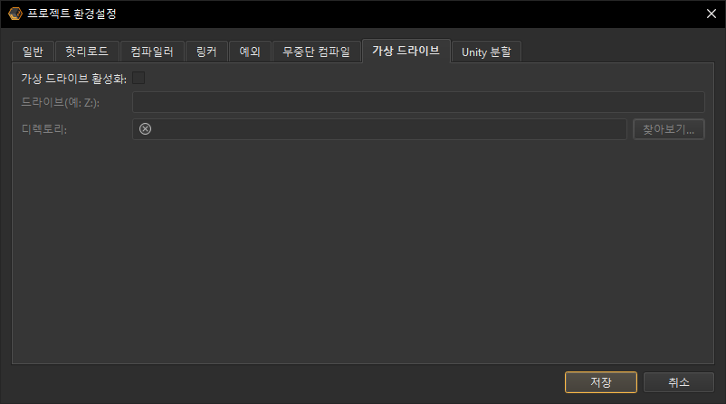
-
"드라이브(예: Z:):"
지정된 디렉토리에 매핑할 가상 드라이브의 문자를 지정할 수 있습니다. 문자 뒤에는 콜론(예: "Z:")이 와야 합니다(따옴표 제외). -
"디렉토리:"
위에 지정된 드라이브 문자에 매핑되는 디렉터리를 설정할 수 있습니다(예: C:\MyPath).
Unity 분할
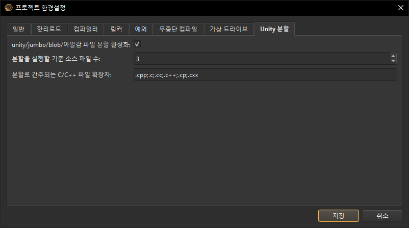
-
"unity/jumbo/blob/아말감 파일 분할 활성화:"
이 옵션을 활성화하면 Live++가 유니티 파일 분할을 수행합니다. -
"분할을 실행할 기준 소스 파일 수:"
Live++가 분할을 시도하기 전에 유니티 파일에 포함되어야 하는 최소 .cpp 파일 수를 지정합니다(예: 이 임계값을 3개로 설정하면 3개 이상의 .cpp 파일이 포함된 유니티 파일만 분할됩니다). -
"분할로 간주되는 C/C++ 파일 확장자:"
유니티 파일을 분할할 때 C/C++ 파일로 처리되는 파일 확장자 목록입니다.
API
Live++는 꽤 잘 알아내지만 마법을 부리지는 못합니다. API를 사용하면 특정 시나리오를 작동시키는 데 필요한 도움을 제공할 수 있으며, C와 C++ 모두에서 사용할 수 있는 여러 헤더 파일로 제공됩니다. 하지만 클라이언트 코드는 플랫폼과 언어에 관계없이 특정 헤더 파일 하나만 포함하면 됩니다.
명명 규칙
일반적으로 모든 API 심볼은 공통 접두사를 공유합니다. 모든 매크로는 LPP_로 시작하고 함수는 Lpp로 시작합니다. C++에서는 이름 충돌 가능성을 더욱 줄이기 위해 모든 함수가 lpp 네임스페이스의 일부가 됩니다.
Flavours
디렉터리 또는 경로를 기대하는 모든 API는 두 가지 버전으로 제공됩니다: const char* 인수를 받는 ANSI 버전과 const wchar_t* 인수를 받는 와이드 문자 버전입니다.
버전 관리
Live++는 간단한 버전 관리 체계를 사용하여 헤더 파일과 DLL이 동기화되지 않도록 합니다. 이를 위해 헤더 파일은 DLL이 내보낼 것으로 예상되는 API의 버전을 정의합니다:
#define LPP_VERSION "2.0.0"내부적으로 DLL은 빌드된 API 버전을 반환하는 함수를 노출합니다(예: 다음과 같이):
LPP_API const char* LppGetVersion(void);또한 DLL은 내부적으로 버전 검사를 수행하여 API와 DLL 버전이 일치하는지 여부를 반환하는 함수를 제공합니다:
LPP_API bool LppCheckVersion(const char* const expectedVersion);에이전트를 생성할 때 이러한 검사가 자동으로 수행되어 API와 DLL 버전이 항상 일치하는지 확인할 수 있습니다.
Agent 유효성 검사
에이전트 생성이 성공적으로 완료되었는지 확인하려면 다음 API를 사용할 수 있습니다:
| API | 설명 |
|---|---|
bool lpp::LppIsValidDefaultAgent(const LppDefaultAgent* const agent); |
지정된 기본 에이전트가 유효한지 여부를 반환합니다. |
bool lpp::LppIsValidSynchronizedAgent(const LppSynchronizedAgent* const agent); |
주어진 동기화된 에이전트가 유효한지 여부를 반환합니다. |
연결 콜백
코드베이스 또는 엔진과의 보다 심층적인 통합을 위해 다음과 같은 선택적 API를 사용하여 Agent, Bridge 및 Broker 연결이 성공했는지 확인할 수 있습니다:
| API | 설명 |
|---|---|
typedef void LppOnConnectionCallback(void* context, lpp::LppConnectionStatus status); |
콜백 함수 유형. |
void Agent::OnConnection(void* context, lpp::LppOnConnectionCallback* callback); |
Agent를 Bridge/Broker에 연결하려고 시도한 후 사용자가 제공한 컨텍스트 및 연결 상태와 함께 지정된 콜백을 호출합니다. |
이 API는 차단되지 않으며 스레드에 안전합니다. Live++는 내부적으로 연결 시도가 이루어지기 전이나 후에 API가 호출되었는지 여부에 관계없이 항상 최종 연결 상태와 함께 콜백을 한 번만 호출합니다.
Hook
Hook을 사용하면 컴파일이 진행되는 동안 진행률 표시줄, 메시지 상자 등을 표시하여 Live++를 엔진/프레임워크/애플리케이션에 보다 심층적으로 통합할 수 있습니다. 또한 컴파일 및 링크 정보와 오류를 출력하고 구조 변경을 지원하는 데에도 훅을 사용할 수 있습니다.
참고
프로세스가 디버거 (예: 중단점)에 있는 경우, 프로젝트 환경설정을 통해 선택하지 않는 한 Live++는 사용자가 설치한 훅을 호출하지 않습니다.
컴파일 후크
컴파일 훅을 사용하면 핫 리로드 컴파일 프로세스에 훅을 걸고 컴파일 프로세스의 여러 단계에 대한 알림을 받을 수 있습니다. 지원되는 컴파일 훅은 다음과 같습니다:
| API | 설명 |
|---|---|
void PrecompileHook(lpp::LppPrecompileHookId, const wchar_t* const recompiledModulePath, unsigned int filesToCompileCount); |
컴파일이 시작되기 전에 호출되는 훅을 등록합니다.LPP_PRECOMPILE_HOOK(functionName) 매크로로 등록합니다. |
void PostcompileHook(lpp::LppPostcompileHookId, const wchar_t* const recompiledModulePath, unsigned int filesToCompileCount); |
컴파일이 완료된 후 호출되는 훅을 등록합니다.LPP_POSTCOMPILE_HOOK(functionName) 매크로와 함께 등록됩니다. |
void CompileStartHook(lpp::LppCompileStartHookId, const wchar_t* const recompiledModulePath, const wchar_t* const recompiledSourcePath); |
파일 컴파일이 시작될 때 호출되는 훅을 등록합니다.LPP_COMPILE_START_HOOK(functionName) 매크로와 함께 등록됩니다. |
void CompileSuccessHook(lpp::LppCompileSuccessHookId, const wchar_t* const recompiledModulePath, const wchar_t* const recompiledSourcePath); |
파일 컴파일이 성공했을 때 호출되는 훅을 등록합니다.LPP_COMPILE_SUCCESS_HOOK(functionName) 매크로와 함께 등록됩니다. |
void CompileErrorHook(lpp::LppCompileErrorHookId, const wchar_t* const recompiledModulePath, const wchar_t* const recompiledSourcePath, const wchar_t* const compilerOutput); |
파일 컴파일에 실패했을 때 호출되는 훅을 등록합니다.LPP_COMPILE_ERROR_HOOK(functionName) 매크로와 함께 등록됩니다. |
대부분의 훅은 유사한 함수 서명을 기대하기 때문에 첫 번째 인수로 예상되는 다른 lpp::Lpp*HookId 값은 추가적인 유형 안전 및 보호 기능만 제공합니다.
const wchar_t* const recompiledModulePath 및 const wchar_t* const recompiledSourcePath 인수는 각각 재컴파일된 모듈과 소스 파일의 절대 경로를 제공합니다.
링크 후크
링크 훅을 사용하면 핫 리로드 링크 프로세스에 연결하고 링크 프로세스의 여러 단계에 대한 알림을 받을 수 있습니다. 지원되는 링크 후크는 다음과 같습니다:
| API | 설명 |
|---|---|
void LinkStartHook(lpp::LppLinkStartHookId, const wchar_t* const recompiledModulePath); |
링크가 시작될 때 호출되는 훅을 등록합니다.LPP_LINK_START_HOOK(functionName) 매크로로 등록합니다. |
void LinkSuccessHook(lpp::LppLinkSuccessHookId, const wchar_t* const recompiledModulePath); |
연결이 성공했을 때 호출되는 훅을 등록합니다.LPP_LINK_SUCCESS_HOOK(functionName) 매크로와 함께 등록됩니다. |
void LinkErrorHook(lpp::LppLinkErrorHookId, const wchar_t* const recompiledModulePath, const wchar_t* const linkerOutput); |
연결에 실패했을 때 호출되는 훅을 등록합니다.LPP_LINK_ERROR_HOOK(functionName) 매크로에 등록됩니다. |
대부분의 후크는 유사한 함수 서명을 기대하므로, 첫 번째 인수로 예상되는 다른 lpp::Lpp*HookId 값은 추가적인 유형 안전 및 보호 기능만 제공합니다.
const wchar_t* const recompiledModulePath 인수는 재컴파일된 모듈의 절대 경로를 제공합니다.
예제
Live++는 후크를 보여주는 "06_Hooks" 라는 예제와 함께 제공됩니다.
핫-리로드 후크
핫-리로드 후크를 사용하면 핫-리로드 프로세스에 연결하여 패치 작업의 여러 단계에 대한 알림을 받을 수 있습니다. 다음과 같은 핫-로드 후크가 지원됩니다:
| API | 설명 |
|---|---|
void PrePatchHook(lpp::LppHotReloadPrepatchHookId, const wchar_t* const recompiledModulePath, const wchar_t* const* const modifiedFiles, unsigned int modifiedFilesCount, const wchar_t* const* const modifiedClassLayouts, unsigned int modifiedClassLayoutsCount); |
패치가 대상 애플리케이션에 로드되기 전에 호출되는 훅을 등록합니다.LPP_HOTRELOAD_PREPATCH_HOOK(functionName) 매크로로 등록합니다. |
void PostPatchHook(lpp::LppHotReloadPostpatchHookId, const wchar_t* const recompiledModulePath, const wchar_t* const* const modifiedFiles, unsigned int modifiedFilesCount, const wchar_t* const* const modifiedClassLayouts, unsigned int modifiedClassLayoutsCount); |
패치가 대상 애플리케이션에 로드된 후 호출되는 훅을 등록합니다.LPP_HOTRELOAD_POSTPATCH_HOOK(functionName) 매크로와 함께 등록됩니다. |
두 훅 모두 동일한 함수 서명을 기대하기 때문에 첫 번째 인수로 예상되는 다른 lpp::Lpp*HookId 값은 추가적인 유형 안전 및 보호 기능만 제공합니다.
const wchar_t* const recompiledModulePath 인수는 재컴파일된 모듈의 절대 경로를 제공합니다.
const wchar_t* const* const modifiedFiles, unsigned int modifiedFilesCount 인수는 수정된 파일의 절대 경로 배열을 제공합니다.
참고
const wchar_t* const* const modifiedClassLayouts, unsigned int modifiedClassLayoutsCount 인수는 결국 수정된 클래스 레이아웃의 이름 배열을 제공하기 위한 것이지만 이 기능은 아직 사용할 수 없습니다.
예제
Live++와 함께 제공되는 모든 예제에는 특정 파일이 수정될 때 클래스 인스턴스 해체 및 재구축을 지원하는 사전 패치 및 사후 패치 후크가 포함되어 있습니다( const wchar_t* const* const modifiedFiles, unsigned int modifiedFilesCount 인자 사용).
글로벌 핫-리로드 후크
글로벌 핫-리로드 후크를 사용하면 핫-리로드 프로세스에 연결하여 핫-리로드 작업의 시작과 종료에 대한 알림을 받을 수 있습니다. 다음과 같은 글로벌 핫-로드 후크가 지원됩니다:
| API | 설명 |
|---|---|
void GlobalHotReloadStart(lpp::LppGlobalHotReloadStartHookId); |
핫 리로드 작업이 시작된 후 호출되는 글로벌 훅을 등록합니다.LPP_GLOBAL_HOTRELOAD_START_HOOK(functionName) 매크로로 등록합니다. |
void GlobalHotReloadEnd(lpp::LppGlobalHotReloadEndHookId); |
핫 로드 작업이 완료되기 전에 호출되는 글로벌 훅을 등록합니다.LPP_GLOBAL_HOTRELOAD_END_HOOK(functionName) 매크로와 함께 등록됩니다. |
두 훅 모두 동일한 함수 서명을 기대하기 때문에 첫 번째 인수로 예상되는 다른 lpp::Lpp*HookId 값은 추가적인 유형 안전 및 보호 기능만 제공합니다.
참고
다른 훅과 달리 이 훅은 전역으로 간주됩니다. 즉, 실제로 어떤 모듈에 훅이 포함되어 있든 상관없이 등록된 모듈의 변경이 감지될 때마다 항상 호출됩니다.구조적 변경
다음 작업은 "구조적 변경"으로 간주됩니다:
- 클래스 선언의 메모리 레이아웃 변경, 여기에는 다음이 포함됩니다:
- 베이스 클래스 추가 또는 제거
- 정적이 아닌 데이터 멤버 추가 또는 제거
- 정적이 아닌 데이터 멤버의 순서 변경
- 가상 함수 테이블의 레이아웃 또는 내용 변경, 여기에는 다음이 포함됩니다:
- 다형성 기본 클래스 추가 또는 제거
- 가상 함수 추가 또는 제거
- 가상 함수의 순서 변경
- 가상 함수의 서명 변경
기존 코드와 데이터를 구조적으로 변경할 때 Live++는 새 코드가 이전 메모리 레이아웃에 할당되고 저장된 기존 데이터와 올바르게 작동할 수 있는지 확인해야 합니다. 이를 위해서는 기존 객체의 데이터를 이전 메모리 레이아웃에서 새 메모리 레이아웃으로 마이그레이션해야 하며, 이는 사전 패치 및 사후 패치 핫 리로드 훅을 사용하여 수행할 수 있습니다.
훅 문은 전역 범위의 어느 곳에나 넣을 수 있으며 자동으로 호출됩니다. 후크의 개수나 후크를 넣을 수 있는 파일 수에는 제한이 없으며, 원하는 번역 단위로 원하는 만큼 후크를 추가할 수 있습니다.
다음은 패치 간에 데이터 마이그레이션을 수행하는 방법에 대한 간단한 예시입니다:
void MyOwnPrePatchHook(lpp::LppHotReloadPrepatchHookId, const wchar_t* const, const wchar_t* const* const, unsigned int, const wchar_t* const* const, unsigned int)
{
serialization::SerializeAndDeleteObjects(g_allObjects, g_buffer);
}
void MyOwnPostPatchHook(lpp::LppHotReloadPostpatchHookId, const wchar_t* const, const wchar_t* const* const, unsigned int, const wchar_t* const* const, unsigned int)
{
serialization::CreateAndSerializeObjects(g_allObjects, g_buffer);
}
LPP_HOTRELOAD_PREPATCH_HOOK(MyOwnPrePatchHook);
LPP_HOTRELOAD_POSTPATCH_HOOK(MyOwnPostPatchHook);기본 아이디어는 항상 동일합니다:
- 기존 객체의 데이터 멤버를 메모리에 직렬화합니다.
- 개체를 삭제합니다.
- 새 클래스 레이아웃을 사용하여 객체를 다시 만듭니다.
- 데이터 멤버를 메모리에서 새 객체로 직렬화합니다.
이 작업이 얼마나 어렵거나 쉬운지는 사용하는 설정과 엔진에 따라 다릅니다. 패치 후 훅에서 현재 레벨을 다시 시작하거나 다시 로드하는 등의 다른 대안을 고려할 수도 있습니다. 이와 같은 비정상적인 사용 사례를 허용하기 위해 후크를 자유롭게 사용할 수 있습니다.
중요
일부 오브젝트를 사용하는 동안 메모리 레이아웃이 변경되지 않도록 하려면 동기화된 에이전트를 사용할 것을 강력히 권장합니다. 스택에서 생성된 객체는 새 클래스 레이아웃으로 마이그레이션할 수 없다는 점에 유의하세요.
예제
Live++와 함께 제공되는 모든 예시에는 특정 파일이 수정될 때 데이터 마이그레이션을 지원하는 핫 리로드 후크가 포함되어 있습니다.
기본 설정 적용
원하는 경우 다음 API를 사용하여 프로그래밍 방식으로 Live++ 글로벌 환경설정을 적용할 수 있습니다:
| API | 설명 |
|---|---|
void Agent::SetBoolPreferences(LppBoolPreferences preferences, bool value); |
LppBoolPreferences 열거형에서 부울 환경설정을 설정합니다. |
void Agent::SetIntPreferences(LppIntPreferences preferences, int value); |
LppIntPreferences 열거형에서 정수 환경설정을 설정합니다. |
void Agent::SetStringPreferences(LppStringPreferences preferences, const char* const value); |
LppStringPreferences 열거형에서 문자열 환경설정을 설정합니다. |
void Agent::SetShortcutPreferences(LppShortcutPreferences preferences, int virtualKeyCode, int modifiers); |
LppShortcutPreferences 열거형에서 바로 가기 환경설정을 설정합니다. |
LppBoolPreferences, LppIntPreferences, LppStringPreferences 및 LppShortcutPreferences 열거형에 있는 각 열거자 값은 전역 환경설정의 정확히 하나의 옵션에 해당합니다. 열거형은 LPP_API_Preferences.h에 포함되며, 열거형 값은 설명이 필요 없는 이름을 가집니다.
UI에 로깅하기
Live++에서는 다음 API를 사용하여 Broker UI에 메시지를 로깅할 수 있습니다:
| API | 설명 |
|---|---|
void Agent::LogMessageANSI(const char* const message); |
Broker UI에 로그를 보냅니다. |
void Agent::LogMessage(const wchar_t* const message); |
Broker UI에 로그를 보냅니다. |
제한 사항
현재 버전의 Live++에는 몇 가지 사소한 제한 사항이 있습니다. 그러나 달리 명시되지 않는 한 이는 Live++ 인프라의 근본적인 제한이 아니라 계획은 있지만 아직 제공되지 않는 기능이라는 점을 유념하세요. Live++는 향후 업데이트를 통해 이러한 제한을 해제할 예정입니다.
오버헤드
Live++ 코드 패치를 빌드하여 설치하지 않는 한, Live++로 인해 발생하는 유일한 런타임 오버헤드는 각 함수 앞에 사용되지 않는 몇 바이트를 삽입하는 /FUNCTIONPADMIN 링커 옵션으로 인한 것입니다. 그러나 이로 인한 성능 영향은 측정할 수 있을 정도로 미미합니다.
증분 연결로 빌드된 모듈의 경우, Live++는 자동으로 증분 연결 씽크를 사용하고 함수 주소를 직접 패치합니다. 이 경우 Live++를 사용하여 패치된 함수는 추가 오버헤드를 전혀 유발하지 않습니다.
다른 모든 경우에는 핫패치 기법을 사용하여 함수를 패치하는데, 여기에는 짧은 2바이트 점프 한 번과 새 함수에 대한 상대 점프 한 번이 포함됩니다.
Visual Studio의 중단점
Live++로 핫 로드한 소스 파일에 새 중단점을 설정하면 Visual Studio 디버거는 해당 소스 파일이 포함된 모든 패치에 이 중단점을 적용하려고 시도합니다. 특히 기존 소스 파일에 새 코드 줄을 추가한 후에는 혼란스러워질 수 있습니다:

위 이미지에서 볼 수 있듯이 Cube.cpp의 20줄에 새 중단점을 설정하면 디버거가 21줄과 22줄에도 추가 중단점을 설정합니다. 이전 코드가 실제로 실행되지 않으므로 중단점은 예상대로 작동하지만 표시기 여백의 빨간색 점은 오해의 소지가 있습니다.
이를 완화하려면 Visual Studio의 Tools -> Options... -> Debugging -> General에서 Require source files to exactly match the original version를 활성화하는 것이 좋습니다.
디버거의 전역 변수
핫 리로드된 소스 파일에서 디버거를 실행할 때 디버거는 일반적으로 전역 및 정적 변수의 값을 표시하지 못합니다. 이는 이러한 변수가 원래 실행 파일에 있는 반면 패치 코드는 동적 라이브러리에서 삽입되기 때문입니다.
이 문제를 해결하기 위해 Visual Studio와 Rider는 모두 모듈 컨텍스트를 디버거에 전달할 수 있는 Context Operator 지원합니다.
예를 들어 MyApplication.exe라는 애플리케이션의 globalNamespace 네임스페이스에 포함된 g_globalInteger라는 전역 변수를 {,,MyApplication.exe}globalNamespace::g_globalInteger 감시 창에 추가할 수 있습니다.
스택의 함수
Live++의 코드 패치 작동 방식 때문에 현재 스택에 있는 함수는 코드 변경 사항을 관찰하기 전에 다시 입력해야 합니다. 실제로는 거의 문제가 되지 않으며, Live++가 인라인 함수를 올바르게 처리하고 함수에 새로운 스택 변수를 도입하는 등의 작업을 수행할 수 있습니다.
참고
이는 Live++에서 사용하는 패치 메커니즘에 내재된 제한 사항이며 변경할 수 없습니다.
스레드-로컬 스토리지
스레드-로컬 스토리지 변수를사용하는 것은 괜찮지만, 스레드-로컬 스토리지에 새로운 전역 또는 정적 변수를 도입하는 것은 현재 지원되지 않습니다.
Clang의 동적 이니셜라이저
Clang으로 컴파일할 때 동적 이니셜라이저가 필요한 새로운 전역 또는 정적 변수를 도입하는 것은 지원되지 않습니다. 동적 이니셜라이저는 Live++로 다시 컴파일된 패치에서 호출되지 않습니다.
알려진 문제
Clang을 사용한 FASTBuild
Clang과 함께 FASTBuild를 사용하면 소스 파일 전처리 중에 모든 -I 명령줄 인수가 제거되어 재컴파일 중에 포함이 누락될 가능성이 높습니다.
이는 Clang을 사용할 때 FASTBuild에서 더 이상 사용되지 않는 검사로 인해 발생하는 것으로 보입니다. 해결 방법으로, .bff 스크립트에서 .CompilerFamily = 'clang' 을 지정하지 않거나 더 이상 사용되지 않는 검사 없이 소스에서 FASTBuild를 빌드하세요.
'/external:I' 에는 '/external:W' 가 필요함
특정 버전의 Visual Studio에서는 도구 체인이 외부 포함 환경을 PDB 파일에 올바르게 저장하지 못하며, 이는 Microsoft에서 인정한 사항입니다.
이 경우 컴파일러에서 /external:I를 무시하므로 다시 컴파일하는 동안 포함이 누락될 가능성이 높습니다. 해결 방법으로 프로젝트 환경설정에서 추가 컴파일러 옵션으로 /external:W0 을 지정하세요.
PDB에서 INCLUDE 누락
위에서 언급한 버그와 유사하게, 특정 버전의 Visual Studio는 Microsoft에서 인정한 대로 PDB 파일에서 INCLUDE 환경을 캡처하여 저장하지 않습니다.
이 경우 다시 컴파일하는 동안 포함이 누락될 수 있습니다. 해결 방법으로 프로젝트 환경설정에서 추가 컴파일러 옵션으로 필요한 포함 경로를 지정하세요.
중지된 프로세스에서 핫 다시 로드
Visual Studio 2022(버전 17.11)에 도입된 이 기능은 이제 디버거가 내부적으로 컨텍스트 구조를 캐시하여 GetThreadContext() Win32 API가 명령 포인터에 대해 가짜 값을 반환하는 것으로 이어집니다( Microsoft에서 인정한 바와 같이).
안타깝게도 Live++는 해당 프로세스가 디버깅되는 동안 핫 리로드된 프로세스의 명령어 포인터에 대한 지식에 의존합니다. 해결 방법이 Live++ 2.8.0에 구현되었지만, 관련 없는 Win32 API를 중단하는 것은 다소 영향이 큰 것으로 보이므로 여전히 이 동작을 수정할 것을 Microsoft에 촉구합니다.
문제 해결
Live++ 사용 중 문제가 발생하는 경우 문제 해결을 위해 특별히 맞춤화된 몇 가지 기능이 있습니다.
누락된 컴파일랜드
Live++를 애플리케이션에 처음 통합할 때 모든 컴파일러 및 링커 옵션이 올바르게 설정되지 않았거나 일부 번역 단위 또는 동적 라이브러리가 Live++에서 로드 및 활성화되지 않은 상황에 직면할 수 있습니다. 불완전한 번역 단위와 모듈은 기본적으로 컴파일랜드 보기에 표시되지 않으므로 로드에 실패한 컴파일랜드를 추적하기 어려울 수 있습니다.
이 문제를 해결하려면 편집 -> 전역 환경설정... -> 핫리로드 "불완전한 모듈 로드" 및 "불완전한 컴파일랜드 로드" 두 가지 옵션을 활성화하세요. 이 설정이 활성화되면 Live++는 로드에 실패했는지 여부에 관계없이 모든 번역 단위와 모듈을 컴파일랜드 보기에 나열합니다.
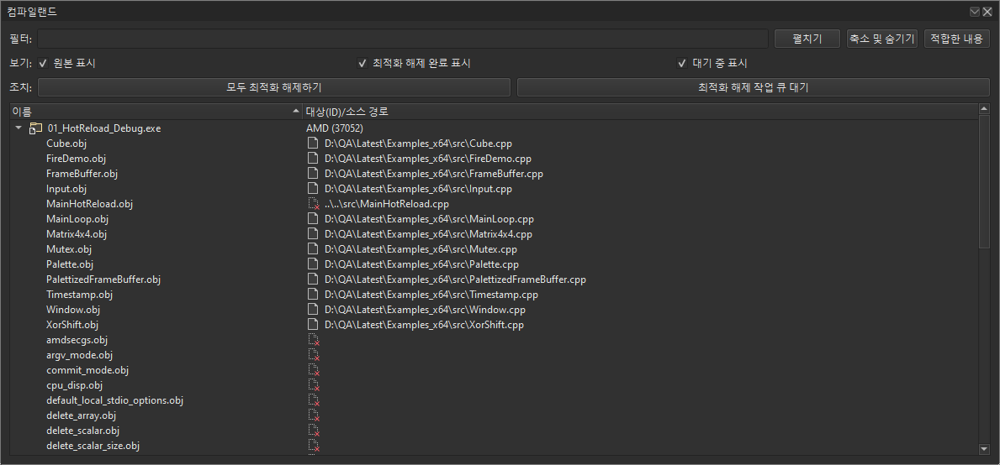
또한 번역 단위 또는 모듈을 마우스 오른쪽 버튼으로 클릭하고 상세 정보 표시... 를 선택하면 이 특정 번역 단위 또는 모듈에 대해 저장된 모든 정보와 식별된 모든 결함이 표시된 대화 상자가 나타납니다:
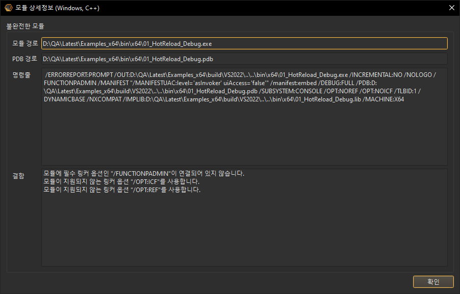
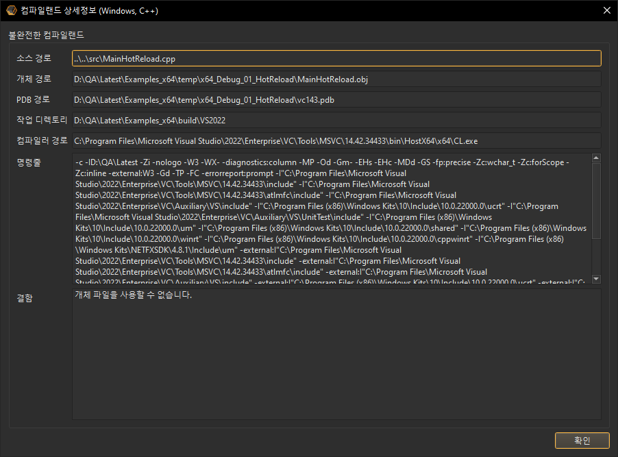
자세한 컴파일
특정 상황에서는 Live++를 통한 변경 사항 재컴파일이 실패할 수 있습니다. 이는 프로젝트 기본 설정 누락, 이국적인 빌드 설정 또는 Live++의 버그로 인해 발생할 수 있습니다. 디버그 -> 컴파일의 자세한 정보 표시(verbose) 토글에서 자세한 컴파일을 켜면 이러한 문제를 진단하는 데 도움이 됩니다.
자세한 컴파일이 활성화되면 Live++는 파일을 다시 컴파일할 때 다음 정보를 출력합니다:
- 컴파일러 경로
- 컴파일러 작업 디렉터리
- 컴파일러 명령줄 옵션
- 포함된 파일
상세 링크
장황한 컴파일과 유사하게 디버그 -> 연결의 자세한 정보 표시(verbose) 토글 아래에 있는 장황한 링크는 Live++에서 패치 링크에 실패할 수 있는 문제를 진단하는 데 도움이 됩니다.
버버스 링크가 활성화되면 Live++는 패치를 링크할 때 다음 정보를 출력합니다:
- 링커 경로
- 링커 작업 디렉터리
- 링커 명령줄 옵션
타사 라이브러리
json.h
This is free and unencumbered software released into the public domain.
Anyone is free to copy, modify, publish, use, compile, sell, or
distribute this software, either in source code form or as a compiled
binary, for any purpose, commercial or non-commercial, and by any
means.
In jurisdictions that recognize copyright laws, the author or authors
of this software dedicate any and all copyright interest in the
software to the public domain. We make this dedication for the benefit
of the public at large and to the detriment of our heirs and
successors. We intend this dedication to be an overt act of
relinquishment in perpetuity of all present and future rights to this
software under copyright law.
THE SOFTWARE IS PROVIDED "AS IS", WITHOUT WARRANTY OF ANY KIND,
EXPRESS OR IMPLIED, INCLUDING BUT NOT LIMITED TO THE WARRANTIES OF
MERCHANTABILITY, FITNESS FOR A PARTICULAR PURPOSE AND NONINFRINGEMENT.
IN NO EVENT SHALL THE AUTHORS BE LIABLE FOR ANY CLAIM, DAMAGES OR
OTHER LIABILITY, WHETHER IN AN ACTION OF CONTRACT, TORT OR OTHERWISE,
ARISING FROM, OUT OF OR IN CONNECTION WITH THE SOFTWARE OR THE USE OR
OTHER DEALINGS IN THE SOFTWARE.
For more information, please refer to http://unlicense.org/
Intel® X86 Encoder Decoder (Intel® XED)
Copyright (c) 2023 Intel Corporation
Licensed under the Apache License, Version 2.0 (the "License");
you may not use this file except in compliance with the License.
You may obtain a copy of the License at
http://www.apache.org/licenses/LICENSE-2.0
Unless required by applicable law or agreed to in writing, software
distributed under the License is distributed on an "AS IS" BASIS,
WITHOUT WARRANTIES OR CONDITIONS OF ANY KIND, either express or implied.
See the License for the specific language governing permissions and
limitations under the License.
xxHash Library
Copyright (c) 2012-2020 Yann Collet
All rights reserved.
BSD 2-Clause License (https://www.opensource.org/licenses/bsd-license.php)
Redistribution and use in source and binary forms, with or without modification,
are permitted provided that the following conditions are met:
* Redistributions of source code must retain the above copyright notice, this
list of conditions and the following disclaimer.
* Redistributions in binary form must reproduce the above copyright notice, this
list of conditions and the following disclaimer in the documentation and/or
other materials provided with the distribution.
THIS SOFTWARE IS PROVIDED BY THE COPYRIGHT HOLDERS AND CONTRIBUTORS "AS IS" AND
ANY EXPRESS OR IMPLIED WARRANTIES, INCLUDING, BUT NOT LIMITED TO, THE IMPLIED
WARRANTIES OF MERCHANTABILITY AND FITNESS FOR A PARTICULAR PURPOSE ARE
DISCLAIMED. IN NO EVENT SHALL THE COPYRIGHT HOLDER OR CONTRIBUTORS BE LIABLE FOR
ANY DIRECT, INDIRECT, INCIDENTAL, SPECIAL, EXEMPLARY, OR CONSEQUENTIAL DAMAGES
(INCLUDING, BUT NOT LIMITED TO, PROCUREMENT OF SUBSTITUTE GOODS OR SERVICES;
LOSS OF USE, DATA, OR PROFITS; OR BUSINESS INTERRUPTION) HOWEVER CAUSED AND ON
ANY THEORY OF LIABILITY, WHETHER IN CONTRACT, STRICT LIABILITY, OR TORT
(INCLUDING NEGLIGENCE OR OTHERWISE) ARISING IN ANY WAY OUT OF THE USE OF THIS
SOFTWARE, EVEN IF ADVISED OF THE POSSIBILITY OF SUCH DAMAGE.